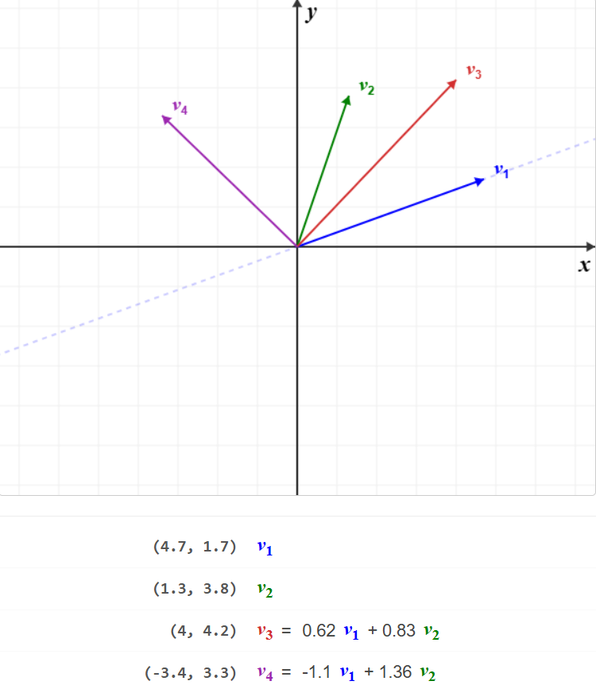
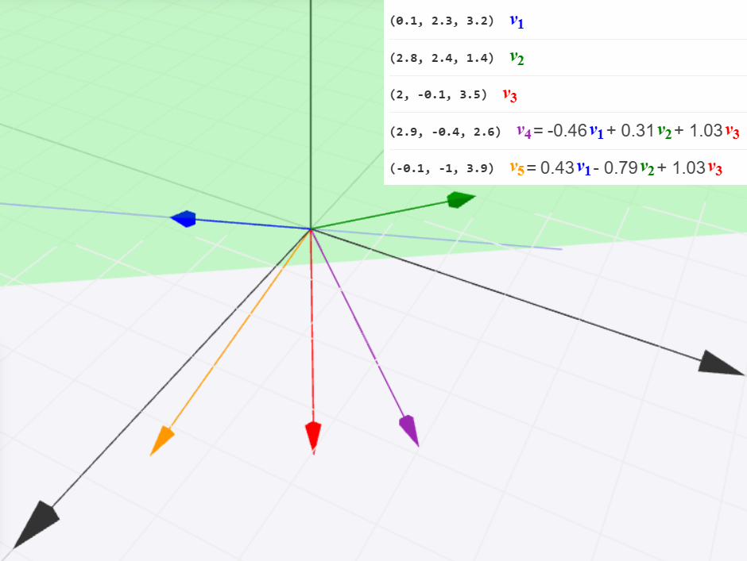
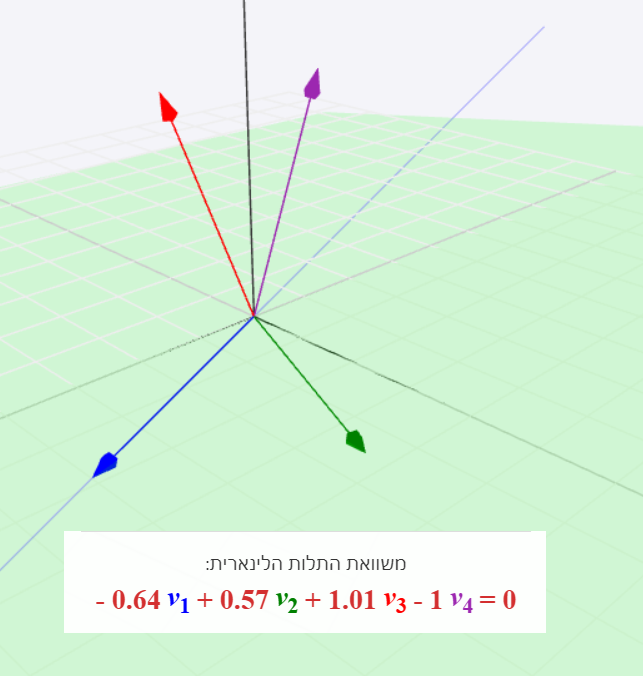

7 מרחבים וקטוריים
7.1 הגדרת מרחבים וקטוריים
עד עכשיו עסקנו בוקטורי שורה/עמודה ב- \mathbb{R}^n ו- \mathbb{C}^n, וגם במטריצות ב- \mathbb{M}_{m\times n}(\mathbb{R}) ו- \mathbb{M}_{m\times n}(\mathbb{C}). נמשיך להתמקד בשתי המסגרות האלו, אבל נרצה להכליל את הדיון כך שיהיה ברור שניתן להשתמש בוקטורים כדי לייצג סוגים שונים של נתונים שמתארים את העולם שלנו (או אפילו אובייקטים יותר מופשטים שיכולים להיות מעניינים במתמטיקה). מבחינה פיזיקלית, וקטורים מייצגים מקום, מהירות, תאוצה ואת כל סוגי הכוחות. אפשר להגדיר כל מיני מרחבים וקטוריים בהתאם להקשר שמעניין אותנו, אבל לכל המרחבים האלה יש תכונות בסיסיות משותפות (אקסיומות).
לפני ההגדרה, נסתכל על דוגמה הנדסית:
נניח שיש לנו מערכת בעלת שלושה כפתורים עצמאיים: חימום, קירור ואוורור. כל מצב של המערכת מתואר על־ידי שלשה (h,c,v), כאשר כל רכיב מייצג את עוצמת ההפעלה של כפתור אחד.
במערכת כזו ניתן לבצע שתי פעולות טבעיות: חיבור שני מצבים (שילוב השפעות של מערכות שונות), וכפל מצב במספר ממשי (הגברה או החלשה אחידה של כל ההשפעות). קיים גם מצב אפס (0,0,0), המייצג מערכת כבויה, ולכל מצב יש מצב נגדי המבטל אותו.
אוסף כל המצבים האפשריים יחד עם פעולות אלו מקיים את כל האקסיומות של מרחב וקטורי, שנגדיר כעת.
מרחב וקטורי (מ"ו) V מעל \mathbb{F} הוא קבוצה של איברים (שנקראים וקטורים) עם פעולות של חיבור וקטורי + וכפל בסקלר \cdot כך שמתקיימות האקסיומות הבאות לכל v_1,v_2,v_3,v \in V ולכל \alpha,\beta \in \mathbb{F} :
סגירות: v_1+v_2\in V וגם \alpha\cdot v\in V.
אסוציאטיביות (חוק הקיבוץ) של חיבור: v_1 + (v_2 + v_3) = (v_1 + v_2) + v_3.
קומוטטיביות (חוק החילוף) של חיבור: v_1 + v_2 = v_2 + v_1.
קיום איבר ניטרלי לחיבור (וקטור האפס): קיים איבר 0_V \in V כך שלכל v \in V מתקיים v + 0_V = v.
קיום איבר נגדי: לכל v \in V קיים -v \in V כך ש v + (-v) = 0.
אסוציאטיביות של כפל בסקלר: לכל v\in V מתקיים \alpha\cdot(\beta v) = (\alpha\beta)\cdot v.
לכל v\in V מתקיים 1\cdot v = v.
דיסטריביוטיביות (חוק הפילוג הראשון): \alpha\cdot(v_1 + v_2) = \alpha\cdot v_1 + \alpha\cdot v_2.
דיסטריביוטיביות (חוק הפילוג השני): לכל v \in V מתקיים (\alpha + \beta)\cdot v = \alpha\cdot v + \beta\cdot v.
Remark. נקרא לאיבר הניטרלי 0_V וקטור האפס של המ"ו V. נזכור שתפקידו להיות ניטרלי ביחס לפעולת החיבור.
בכל אחת מהדוגמאות הבאות, פעולות החיבור והכפל בסקלר כבר הוגדרו בשלב מוקדם יותר בספר. כלל האקסיומות הן קלות לבדיקה (כי הן נובעות מתכונות החיבור והכפל של \mathbb{R}).
\mathbb{R}^2 הוא מ"ו מעל \mathbb{R}.
\mathbb{R}^3 הוא מ"ו מעל \mathbb{R}.
\mathbb{R}^n הוא מ"ו מעל \mathbb{R} לכל n\in\mathbb{N}.
\mathbb{C}^n הוא מ"ו מעל \mathbb{C} לכל n\in\mathbb{N}.
\mathbb{M}_{m\times n}(\mathbb{R}) הוא מ"ו מעל \mathbb{R} לכל m,n\in\mathbb{N}.
\mathbb{M}_{m\times n}(\mathbb{C}) הוא מ"ו מעל \mathbb{C} לכל m,n\in\mathbb{N}.
Remark. כל מ"ו מעל \mathbb{C} הוא גם מ"ו מעל \mathbb{R}, כי \mathbb{R}\subseteq\mathbb{C} ותמיד אפשר לצמצם את הגדרת הכפל בסקלר רק לסקלרים ממשיים. בפרט, \mathbb{C}^2 הוא מ"ו מעל \mathbb{R} אם מניחים שהסקלרים בהם מכפילים וקטורים, הם ממשיים בלבד (אבל הוקטורים עצמם ב- \mathbb{C}^2, לא בהכרח ב- \mathbb{R}^2). למען הסר ספק, לרוב נעסוק ב- \mathbb{R}^n מעל \mathbb{R}, וב- \mathbb{C}^n מעל \mathbb{C}.
ניתן להוכיח תכונות נוספות של מרחבים וקטוריים בעזרת האקסיומות:
יהי V מ"ו מעל \mathbb{F}. אז לכל v,w_1,w_2\in V מתקיים:
w_1+v=w_2+v \implies w_1=w_2
0\cdot v=0_V
(שימו לב להבדל בין הסקלר 0\in\mathbb{F} לבין וקטור האפס 0_V\in V.)
(-1)\cdot v=-v
Proof.
נניח כי מתקיים w_1+v=w_2+v. נשתמש באיבר הנגדי -v ונחבר אותו לשני אגפי המשוואה: w_1+(v+(-v))=w_2+(v+(-v)) \implies w_1+0_V=w_2+0_V \implies w_1=w_2 תחילה השתמשנו באסוציאטיביות ואחר כך בניטרליות של 0_V.
לכל v\in V מתקיים .0\cdot v=(0+0)\cdot v=0\cdot v+0\cdot v קיים איבר נגדי -(0\cdot v) וניתן לחבר אותו לשני אגפי המשוואה: 0\cdot v+(-(0\cdot v))=0\cdot v+0\cdot v+(-(0\cdot v)) \implies 0_V=0\cdot v+0_V \implies 0_V=0\cdot v
לכל v\in V מתקיים .(1+(-1))v=0\cdot v לפי האקסיומה האחרונה ולפי סעיף ב’ נובע כי .1\cdot v+(-1)v=0_V לפי עוד אקסיומה מתקיים 1\cdot v=v, ובנוסף קיים איבר נגדי -v. נחבר אותו לשני אגפי המשוואה משמאל ונקבל -v+v+(-1)v=-v+0_V \implies 0_V+(-1)v=-v \implies (-1)v=-v
◻
Remark. פעולת החיסור בין שני וקטורים v_1,v_2\in V מוגדרת באופן הבא: .v_1-v_2=v_1+(-v_2) זהו סימון יותר נוח, אבל כדאי לזכור שחיסור הוא למעשה חיבור האיבר הנגדי.
יהי V מ"ו מעל \mathbb{F}.
הראו כי וקטור האפס הוא יחיד, כלומר אם 0_V,\mathbf{0}'_V שניהם מקיימים את האקסיומה של וקטור האפס (ניטרליות לחיבור), אז בהכרח 0_V=0'_V.
הראו כי לכל v\in V ולכל \alpha\in\mathbb{F} מתקיים .\alpha\cdot0_V=0_V רמז: השתמשו בשוויון 0_V+0_V=0_V.
Proof.
יהיו 0_V,0'_V שני וקטורי אפס. לפי הניטרליות של 0'_V, מצד אחד מתקיים .0_V+0'_V=0_V מצד שני, לפי הניטרליות של 0_V וחוק החילוף, נובע כי .0_V+0'_V=0'_V
מכאן 0_V=0'_V, כנדרש.
יהיו v\in V ו- \alpha\in \mathbb{F}. אז מתקיים .\alpha\cdot(0_V+0_V)=\alpha\cdot 0_V לפי דיסטריביוטיביות נובע כי .\alpha\cdot 0_V+\alpha\cdot 0_V=\alpha\cdot 0_V נחבר את האיבר הנגדי -(\alpha\cdot 0_V) לשני אגפי המשוואה, ונקבל \alpha\cdot 0_V+\alpha\cdot 0_V-(\alpha\cdot 0_V)=\alpha\cdot 0_V-(\alpha\cdot 0_V) \implies \alpha\cdot 0_V=0_V
◻
ניתן דוגמאות למרחבים וקטוריים נוספים הקשורים לחדו"א, אך נציין מראש שלא נעסוק בהם בקורס. טוב לדעת שמרחבים וקטוריים יכולים לצוץ במקומות לכאורה לא צפויים.
מרחב הסדרות הממשיות: \mathbb{R}^{\mathbb{N}}=\Set{(a_n)_{n=1}^\infty|a_1,a_2,...\in\mathbb{R}} עם חיבור וקטורי שמוגדר ע"י ,(a_n)_{n=1}^\infty+(b_n)_{n=1}^\infty=(a_n+b_n)_{n=1}^\infty כפל בסקלר שמוגדר ע"י \alpha\cdot(a_n)_{n=1}^\infty=(\alpha a_n)_{n=1}^\infty ובתור וקטור האפס ניקח את סדרת האפסים הקבועה .0_V=(0)_{n=1}^\infty
מרחב הפונקציות הממשיות: \mathbb{R}^{\mathbb{R}}=\Set{f:\mathbb{R}\to\mathbb{R}} עם חיבור וקטורי המוגדר ע"י ,\forall x\in\mathbb{R}\quad (f+g)(x)=f(x)+g(x)
כפל בסקלר המוגדר ע"י \forall x\in\mathbb{R}\quad (\alpha f)(x)=\alpha\cdot f(x)
ובתור וקטור האפס ניקח את פונקציית האפס הקבועה .\forall x\in\mathbb{R}\quad 0_V(x)=0
Remark. אחת הסיבות שלא נעסוק בשני המרחבים לעיל היא שהמימד שלהם הוא אינסופי. עוד לא הגדרנו מימד, אבל אפשר לחשוב עליו כעל מספר הפרמטרים הדרושים לתיאור המרחב. במקרה של המישור מדובר ב- 2, ובהכללה המימד של \mathbb{R}^n הוא n (מספר הקוארדינטות). האינטואיציה רומזת שמרחבי הסדרות והפונקציות הרבה יותר מסובכים, כלומר הם ממימד אינסופי. זה חורג ממסגרת הקורס.
7.2 תת-מרחבים
נרצה לעסוק בתת-קבוצות של מרחבים וקטוריים, שגם הן יעמדו בתנאי הסף של להיות מרחבים וקטוריים בפני עצמן.
יהי V מ"ו מעל \mathbb{F}. תת-קבוצה W\subseteq V תיקרא תת-מרחב של V אם W היא מ"ו מעל \mathbb{F} בפני עצמה, עם פעולות החיבור והכפל בסקלר מ- V.
Remark. בהינתן ש- V הוא מ"ו, רוב התכונות של הגדרה עוברות בירושה אל W באופן אוטומטי. למעשה, עבור תת-קבוצה W מספיק לבדוק שוקטור האפס שייך לה, כלומר 0_V\in W, ובנוסף היא מקיימת את תנאי הסגירות:
\forall w_1,w_2\in W\ \forall \alpha\in\mathbb{F}:\ w_1+w_2\in W,\quad \alpha w_1\in W
נוכיח זאת בהמשך. ראשית נראה כמה דוגמאות שמתאימות לאינטואיציה של תת-מרחב.
לכל מ"ו V מעל \mathbb{F} יש תת-מרחב \Set{0_V}. זהו תת-המרחב הקטן ביותר של V. הוא מקיים את תנאי הסגירות כי 0_V+0_V=0_V ולכל \alpha\in\mathbb{F} מתקיים \alpha\cdot 0_V=0_V.
לכל v\in\mathbb{R}^2 כך ש- v\neq 0, הישר L=\Set{tv|t\in\mathbb{R}} הוא תת-מרחב של \mathbb{R}^2. שימו לב שהוא עובר דרך הראשית, שהיא וקטור האפס.
לכל v_1,v_2\in\mathbb{R}^3 שאינם קו-לינאריים, המישור H=\Set{sv_1+tv_2|s,t\in\mathbb{R}} הוא תת-מרחב של \mathbb{R}^3. גם כאן חשוב להבחין ש- H עובר דרך הראשית, שהיא וקטור האפס. אם הוקטורים הם קו-לינאריים ולמשל v_2=\alpha v_1 עבור \alpha\in\mathbb{R}, אז למעשה מתקיים H=\Set{sv_1|s\in\mathbb{R}}. זהו ישר (שעובר דרך הראשית), אך עדיין תת-מרחב.
יהי V מ"ו מעל \mathbb{F}. תהי W\subseteq V. התנאים הבאים שקולים:
W תת-מרחב של V.
0_V\in W וגם לכל w_1,w_2\in W ולכל \alpha\in \mathbb{F} מתקיים w_1+w_2\in W וגם \alpha w_1\in W.
Proof. בכיוון הראשון: אם W תת-מרחב של V, אז הוא מקיים את כל התכונות של הגדרה למרחב וקטורי. לא רק שיש וקטור אפס ב- W, מדובר על 0_V עצמו כי לכל w\in W מתקיים 0_V=0\cdot w\in W לפי טענה .
בכיוון השני: נתון שאקסיומת הסגירות מתקיימת עבור W, וגם האקסיומה של קיום וקטור האפס. כמעט כל שאר האקסיומות מתקיימות באופן אוטומטי לכל תת-קבוצה של V, אבל צריך לוודא קיום איבר נגדי לכל w\in W. זה נובע מסגירות לכפל בסקלר ומטענה כי מתקיים -w=(-1)w\in W. ◻
W=\Set{(x,y,z)\in\mathbb{R}^3|x+y+z=0} היא תת-מרחב של \mathbb{R}^4. נבדוק זאת:
קיום וקטור האפס: מתקיים (0,0,0)\in W כי 0+0+0=0.
תנאי הסגירות: יהיו w_1=(x_1,y_1,z_1),w_2=(x_2,y_2,z_2)\in W. לכן, מתקיים .x_1+y_1+z_1=0=x_2+y_2+z_2
נבדוק אם מתקיים w_1+w_2=(x_1+x_2,y_1+y_2,z_1+z_2)\in W. אכן: (x_1+x_2)+(y_1+y_2)+(z_1+z_2)=(x_1+y_1+z_1)+(x_2+y_2+z_2)=0+0=0 כנדרש.
באופן דומה: יהי \alpha\in\mathbb{R}. עבור \alpha w_1=(\alpha x_1,\alpha y_1,\alpha z_1) מתקיים \alpha x_1+\alpha y_1+\alpha z_1=\alpha(x_1+y_1+z_1)=\alpha\cdot 0=0 כנדרש.
הראו כי W=\Set{(x,y,z,0)|x,y,z\in\mathbb{R}} היא תת-מרחב של \mathbb{R}^4.
שימו לב כי תת-מרחב זה אמנם "דומה" ל- \mathbb{R}^3, אך הוא מוכל ב- \mathbb{R}^4.
נבדוק את התנאים לתת-מרחב:
קיום וקטור האפס: מתקיים (0,0,0,0)\in W כי (0,0,0)\in\mathbb{R}^3.
סגירות לחיבור: יהיו w_1=(x_1,y_1,z_1,0),w_2=(x_2,y_2,z_2,0)\in W. אז מתקיים .w_1+w_2=(x_1+y_1,x_2+y_2,x_3+y_3,0)\in W סגירות לכפל בסקלר: לכל \alpha\in\mathbb{R} מתקיים .\alpha(x_1,y_1,z_1,0)=(\alpha x_1,\alpha y_1,\alpha z_1,0)\in W
תת-מרחב זו תת-קבוצה של מ"ו שיש לה "התנהגות טובה" כפי שראינו. בפרק ראינו התנהגות דומה בהקשר של פתרונות של ממ"ל הומוגנית. מרוב חשיבותה ושכיחותה של קבוצת פתרונות של ממ"ל הומוגנית, נקדיש לה סימון משלה.
תהי A\in\mathbb{M}_{m\times n}(\mathbb{F}). קבוצת הפתרונות לממ"ל ההומוגנית Ax=\underline{0} נקראת מרחב הפתרונות של A ומסומנת ע"י \mathop{\mathrm{N}}(A).
\mathop{\mathrm{N}}(A) הוא תת-מרחב של \mathbb{F}^n.
Proof. ראשית, וקטור האפס \underline{0}\in\mathbb{F}^n מקיים \underline{0}\in \mathop{\mathrm{N}}(A) כי A\underline{0}=\underline{0}.
יהיו w_1,w_2\in \mathop{\mathrm{N}}(A). אז לפי ההגדרה מתקיים Aw_1=\underline{0}=Aw_2, ולכן .A(w_1+w_2)=Aw_1+Aw_2=\underline{0}+\underline{0}=\underline{0} \implies w_1+w_2\in \mathop{\mathrm{N}}(A) בנוסף, לכל \alpha\in \mathbb{F} מתקיים .A(\alpha w_1)=\alpha Aw_1=\alpha\cdot \underline{0}=\underline{0} \implies \alpha w_1\in \mathop{\mathrm{N}}(A) אם כן, הראינו כי \mathop{\mathrm{N}}(A) הוא תת-מרחב של \mathbb{F}^n לפי טענה . ◻
Remark. עבור b\neq \underline{0} קבוצת הפתרונות של הממ"ל Ax=b בהכרח אינה תת-מרחב של \mathbb{F}^n. אין בה את וקטור האפס כי A\underline{0}=\underline{0}\neq b. יותר מכך, היא לא סגורה לחיבור וגם לא לכפל בסקלר. אם w_1,w_2 שייכים לקבוצת הפתרונות, אז .A(w_1+w_2)=Aw_1+Aw_2=b+b=2b\neq b לכן לממ"ל הומוגנית יש חשיבות בהקשר של מרחב וקטוריים, להבדיל מממ"ל לא הומוגנית.
הראו כי המישור H=\Set{(1+s,t,s+t)|s,t\in\mathbb{R}} אינו תת-מרחב של \mathbb{R}^3.
אפשר לזהות קבוצה זו כקבוצת הפתרונות של המשוואה הלינארית x+y-z=1, שאינה הומוגנית ולכן קבוצת הפתרונות אינה תת-מרחב. אבל גם בלי המשוואה אפשר לבדוק שוקטור האפס לא שייך ל- H. נשווה את ההצגה הפרמטרית לוקטור האפס ונקבל: (1+s,t,s+t)=(0,0,0) כך מקבלים s=-1,t=0 מצד אחד, ואת המשוואה s+t=0 מצד שני. סתירה.
מה לגבי מטריצות? הבנו שאפשר להתייחס לקבוצה \mathbb{M}_{m\times n}(\mathbb{F}) כמרחב וקטורי (זה מעט מבלבל בהתחלה), אז אילו תת-מרחבים יש לה? הדוגמאות החשובות הן עבור מטריצות ריבועיות (m=n), ולמעשה כבר ראינו אותן.
נסמן V=\mathbb{M}_{n\times n}(\mathbb{F}).
נסמן ב- W_1 את קבוצת המטריצות המשולשיות עליונות. אז W_1 היא תת-מרחב של V.
נסמן ב- W_2 את קבוצת המטריצות המשולשיות תחתונות. אז W_2 היא תת-מרחב של V.
נסמן ב- W_3 את קבוצת המטריצות האלכסוניות. אז W_3 היא תת-מרחב של V.
נסמן ב- W_4 את קבוצת המטריצות הסימטריות. אז W_4 היא תת-מרחב של V.
נסמן ב- W_5 את קבוצת המטריצות האנטי-סימטריות. אז W_5 היא תת-מרחב של V.
W_6=\Set{\mathbf{0}_{n\times n}} היא תת-מרחב של V.
בדקו שכל הדוגמאות הן אכן תת-מרחבים של V=\mathbb{M}_{n\times n}(\mathbb{F}).
קל לראות שמטריצת האפס שייכת לכל אחת מהקבוצות לעיל. היא אלכסונית (ולכן גם משולשית עליונה וגם משולשית תחתונה), סימטרית ואנטי-סימטרית. נסתפק בבדיקת הסגירות עבור W_1 כי שאר הבדיקות דומות.
יהיו A,B\in W_1. אז לפי ההגדרה, לכל i>j מתקיים (A)_{ij}=0=(B)_{ij}. לכן \forall i>j \quad (A+B)_{ij}=(A)_{ij}+(B)_{ij}=0+0=0 וזה בדיוק אומר שמתקיים A+B\in W_1. באופן דומה, לכל \alpha\in\mathbb{F} מתקיים \forall i>j \quad (\alpha A)_{ij}=\alpha(A)_{ij}=\alpha\cdot 0=0 ולכן \alpha A\in W_1.
Remark. האינטואיציה המומלצת לתת-מרחב היא כזו: אם התנאים שמגדירים את W הם למעשה ממ"ל הומוגנית, אז W אמורה להיות תת-מרחב. למשל, עבור W_1 ההגדרה מתייחסת לכל ערכי המטריצה מתחת לאלכסון הראשי. הם אמורים להתאפס, ולכן בעצם יש פה ממ"ל הומוגנית.
עבור W_4 התנאים למטריצה סימטרית הם אוסף משוואות מהצורה a_{ij}=a_{ji}, אז גם כאן מסתתרת ממ"ל הומוגנית. וכן הלאה.
אבל בפועל, הבדיקה המלאה לצורך הפתרון היא לפי טענה .
נראה כי W=\Set{A\in\mathbb{M}_{2\times 2}(\mathbb{R})|\det(A)=0}, כלומר קבוצת כל המטריצות מסדר 2\times 2 שאינן הפיכות, אינה תת-מרחב של \mathbb{M}_{2\times 2}(\mathbb{R}). אמנם מתקיים \mathbf{0}_{2\times 2}\in W, אבל אין סגירות לחיבור. נמצא דוגמה נגדית: עבור A=\begin{pmatrix} 1 & 0 \\ 0 & 0 \end{pmatrix}\quad,\quad B=\begin{pmatrix} 0 & 0 \\ 0 & 1 \end{pmatrix} מתקיים .\det(A)=0=\det(B)\quad,\quad \det(A+B)=\det(I_2)=1\neq 0 לכן A,B\in W אך A+B\notin W.
אז W אינו תת-מרחב. נציין שדווקא מתקיימת סגירות לכפל בסקלר, אבל זה לא מספיק.
Remark. הדוגמה הנגדית לעיל גם מראה שלא בהכרח מתקיים .\det(A+B)=\det(A)+\det(B) למעשה, נדיר למצוא מטריצות (השונות ממטריצת האפס) שעבורן יש שוויון.
האם קבוצת כל המטריצות ההפיכות מסדר 2\times 2 היא תת-מרחב של \mathbb{M}_{2\times 2}(\mathbb{R})?
מדובר על הקבוצה W=\Set{A\in M_{2\times 2}(\mathbb{R})|\det(A)\neq 0}. ניתן להראות שהיא לא מקיימת סגירות לחיבור וגם לא לכפל בסקלר (בגלל סקלר ה- 0), אבל לפני הכל בולטת העובדה שמתקיים .\begin{pmatrix} 0 & 0 \\ 0 & 0 \end{pmatrix}\notin W בהעדר מטריצת האפס, W בהכרח אינה תת-מרחב.
7.3 פרישה
נניח כי W היא תת-מרחב של מ"ו V מעל \mathbb{F}. בהינתן w_1,w_2\in W נובע מטענה שמתקיים \alpha w_1, \beta w_2\in W לכל \alpha,\beta\in \mathbb{F}, ולכן נובע כי \alpha w_1+\beta w_2\in W. כך שני הוקטורים פורשים אינסוף וקטורים ב- W (לא בהכרח את כולם), והוקטורים האלה נקראים צירופים לינאריים של w_1,w_2.
כל וקטור (a,b)\in\mathbb{R}^2 הוא צירוף לינארי של הוקטורים (1,0),(0,1) כי מתקיים .(a,b)=a(1,0)+b(0,1)

באופן כללי, נרצה להגדיר צירוף לינארי של מספר וקטורים (אולי יותר גדול משניים):
יהי V מ"ו מעל \mathbb{F}, ויהיו v_1,...,v_k\in V. צירוף לינארי (צ"ל) של v_1,...,v_k הוא וקטור מהצורה v=\alpha_1v_1+...+\alpha_kv_k כאשר \alpha_1,...,\alpha_k\in\mathbb{F}.
(1,2,3,0)\in \mathbb{R}^4 הוא צ"ל של שלושת הוקטורים (1,0,0,0),(0,1,1,0),(0,0,1,0) כי מתקיים .(1,2,3,0)=1(1,0,0,0)+2(0,1,1,0)+1(0,0,1,0)
האם (0,0,0) הוא צ"ל של (1,0,0),(1,2,3)?
כן, ואין צורך לפתור שום ממ"ל. תמיד ניתן לקבל את וקטור האפס ע"י בחירת כל הסקלרים להיות 0. מתקיים .0(1,0,0)+0(1,2,3)=(0,0,0)
הרעיון של לקחת את כל הצירופים הלינאריים של קבוצה נתונה של וקטורים, נקרא פרישה. אפשר להשתמש בפרישה כדי להגדיר תת-מרחב חדש.
יהי V מ"ו מעל \mathbb{F}, ויהיו v_1,v_2,...,v_k\in V. אז נגדיר את קבוצת כל הצירופים הלינאריים של וקטורים אלה: \mathop{\mathrm{Span}}(v_1,...,v_k)=\Set{\alpha_1v_1+...+\alpha_kv_k|\alpha_1,...,\alpha_k\in\mathbb{F}}
Remark. לפי ההגדרה, מתקיים .v\in\mathop{\mathrm{Span}}(v_1,...,v_k) \iff \exists\alpha_1,...,\alpha_k\in\mathbb{F}\quad v=\alpha_1v_1+...+\alpha_kv_k כאן השתמשנו בסימן \exists שפירושו "קיימים", כלומר הטענה בצד ימין היא שקיימים סקלרים עבורם ("כך ש") מתקיים השוויון של תנאי הפרישה.
רצוי לזכור את \forall (לכל) ו- \exists (קיים/קיימים) כי לפעמים הם מקצרים את הכתיבה. הם נקראים כמתים, במובן של "כימות" הטענה לפי התייחסות לכל הקבוצה או רק לאיבר/איברים מסוימים.

יהי V מ"ו מעל \mathbb{F}, ויהיו v_1,v_2,...,v_k\in V. אז \mathop{\mathrm{Span}}(v_1,...,v_k) הוא תת-מרחב של V המקיים v_1,...,v_k\in \mathop{\mathrm{Span}}(v_1,...,v_k).
Proof. נבדוק את התנאים של טענה .
קיום וקטור האפס: מתקיים .0_V=0\cdot v_1+0\cdot v_2+...+0\cdot v_k\in\mathop{\mathrm{Span}}(v_1,...,v_k)
סגירות לחיבור: יהיו .w_1,w_2\in\mathop{\mathrm{Span}}(v_1,...,v_k)
אז קיימים סקלרים \alpha_1,...,\alpha_k,\beta_1,...,\beta_k\in\mathbb{F} כך ש- .w_1=\alpha_1v_1+...+\alpha_kv_k\quad,\quad w_2=\beta_1v_1+...\beta_kv_k מתקיים: \begin{aligned} w_1+w_2&=(\alpha_1v_1+...+\alpha_kv_k)+(\beta_1v_1+...+\beta_kv_k)\\ &=(\alpha_1+\beta_1)v_1+...+(\alpha_k+\beta_k)v_k\in\mathop{\mathrm{Span}}(v_1,...,v_k) \end{aligned}
סגירות לכפל בסקלר: לכל \gamma\in\mathbb{F} מתקיים .\gamma w_1=\gamma(\alpha_1v_1+...+\alpha_kv_k)=(\gamma\alpha_1)v_1+...+(\gamma\alpha_k)v_k\in\mathop{\mathrm{Span}}(v_1,...,v_k)
לכן, \mathop{\mathrm{Span}}(v_1,...,v_k) הוא תת-מרחב של V. נותר לבדוק כי v_1,...,v_k\in\mathop{\mathrm{Span}}(v_1,...,v_k). אכן, לכל 1\leq j\leq k מתקיים .v_j=0\cdot v_1+...+0\cdot v_{j-1}+1\cdot v_j+0\cdot v_{j+1}+...+0\cdot v_k\in\mathop{\mathrm{Span}}(v_1,...,v_k) ◻
ב- \mathbb{R}^4 ניקח את הוקטורים .v_1=(1,0,1,0),v_2=(1,0,-1,0),v_3=(0,1,0,1) אז לפי ההגדרה מתקיים: \begin{aligned} \mathop{\mathrm{Span}}(v_1,v_2,v_3)&=\Set{\alpha (1,0,1,0)+\beta (1,0,-1,0)+\gamma(0,1,0,1)|\alpha,\beta,\gamma\in\mathbb{R}} \\ &=\Set{(\alpha+\beta,\gamma,\alpha-\beta,\gamma)|\alpha,\beta,\gamma\in\mathbb{R}} \end{aligned} למשל, רואים לפי החישוב כי (1,2,3,4)\notin\mathop{\mathrm{Span}}(v_1,v_2,v_3) שכן 2\neq 4. לעומת זאת, מתקיים (4,2,0,2)\in\mathop{\mathrm{Span}}(v_1,v_2,v_3) כי .(\alpha+\beta,\gamma,\alpha-\beta,\gamma)=(4,2,0,2) \implies \begin{cases} \alpha+\beta&=4 \\ \alpha-\beta&=0 \\ \phantom{\alpha+\beta}\,\gamma&=2 \end{cases} לממ"ל יש פתרון יחיד: \alpha=\beta=\gamma=2. ואכן, מתקיים .(4,2,0,2)=2(1,0,1,0)+2(1,0,-1,0)+2(0,1,0,1)
הטענה הבאה מראה שניתן לאפיין את \mathop{\mathrm{Span}}(v_1,...,v_k) כתת-המרחב הקטן ביותר שמכיל את \Set{v_1,...,v_k}. הכוונה ב"קטן ביותר" היא שכל תת-מרחב אחר שמכיל את \Set{v_1,...,v_k} בהכרח מכיל את \mathop{\mathrm{Span}}(v_1,...,v_k).
יהי W תת-מרחב של מ"ו V מעל \mathbb{F}. אז לכל v_1,...,v_k\in V מתקיים .v_1,...,v_k\in W \iff \mathop{\mathrm{Span}}(v_1,...,v_k)\subseteq W
Proof. הכיוון \implies: נניח כי v_1,...,v_k\in W. אז לכל \alpha_1,...,\alpha_k\in\mathbb{F} מתקיים: \forall 1\leq j\leq n\quad \alpha_jv_j\in W מסגירות לכפל בסקלר. לכן, נובע מסגירות לחיבור כי .\alpha_1v_1+...+\alpha_kv_k\in W הראינו שכל צירוף לינארי של v_1,...,v_k שייך ל- W, כלומר .\mathop{\mathrm{Span}}(v_1,...,v_k)\subseteq W
הכיוון \impliedby: נניח כי \mathop{\mathrm{Span}}(v_1,...,v_k)\subseteq W. לפי טענה מתקיים ,v_1,...,v_k\in \mathop{\mathrm{Span}}(v_1,...,v_k) ולכן .v_1,...,v_k\in W ◻
יהי V מ"ו מעל \mathbb{F}. נאמר ש- V נוצר סופית אם קיימים v_1,...,v_k\in V כך ש- V=\mathop{\mathrm{Span}}(v_1,...,v_k). במקרה זה גם נאמר שהקבוצה \Set{v_1,...,v_k} פורשת את V. ניתן גם לומר (באופן פחות פורמלי) שהוקטורים v_1,...,v_k פורשים את V.
ב- \mathbb{F}^n קבוצת וקטורי היחידה היא קבוצה פורשת. מתקיים \mathop{\mathrm{Span}}(e_1,...,e_n)=\mathbb{F}^n כי לכל v=(\alpha_1,...,\alpha_n)\in\mathbb{F}^n מתקיים .v=\alpha_1e_1+...+\alpha_ne_n
ב- \mathbb{M}_{2\times 2}(\mathbb{F}) נגדיר .A_1=\begin{pmatrix} 1 & 0 \\ 0 & 0 \end{pmatrix},\quad A_2=\begin{pmatrix} 0 & 1 \\ 0 & 0 \end{pmatrix},\quad A_3=\begin{pmatrix} 0 & 0 \\ 1 & 0 \end{pmatrix},\quad A_4=\begin{pmatrix} 0 & 0 \\ 0 & 1 \end{pmatrix} הקבוצה \Set{A_1,A_2,A_3,A_4} פורשת את \mathbb{M}_{2\times 2}(\mathbb{F}) כי לכל a,b,c,d\in\mathbb{F} מתקיים .\begin{pmatrix} a & b\\ c & d \end{pmatrix}=aA_1+bA_2+cA_3+dA_4
ב- \mathbb{M}_{m\times n}(\mathbb{F}) נסמן לכל 1\leq i\leq m, 1\leq j\leq n ב- E_{ij} את המטריצה שכולה אפסים פרט ל- 1 בשורה ה- i ובעמודה ה- j, כלומר .E_{ij}=\begin{pmatrix} 0 &\cdots &0 &\cdots &0 \\ \vdots & \vdots &\vdots &\vdots &\vdots \\ 0 &\cdots &1 &\cdots &0 \\ \vdots & \vdots &\vdots &\vdots &\vdots \\ 0 &\cdots &0 &\cdots &0 \end{pmatrix} אז \Set{E_{ij}|1\leq i\leq m, 1\leq j\leq n} פורשת את M_{m\times n}(\mathbb{F}) כי לכל A\in M_{m\times n}(\mathbb{F}) מתקיים \begin{aligned} A&=\sum_{1\leq i\leq m}\sum_{1 \leq j \leq n}(A)_{ij}E_{ij}=(A)_{11}E_{11}+....+(A)_{1n}E_{1n}\\ &+...+(A)_{m1}E_{m1}+....+(A)_{mn}E_{mn} \end{aligned}
מצאו קבוצה פורשת עבור תת-המרחב של המטריצות הסימטריות.
מצאו קבוצה פורשת עבור תת-המרחב של המטריצות האנטי-סימטריות.
כל מטריצה סימטרית היא מהצורה .\begin{pmatrix} a & b\\ b & d \end{pmatrix}=a\begin{pmatrix} 1 & 0\\ 0 & 0 \end{pmatrix}+b\begin{pmatrix} 0 & 1\\ 1 & 0 \end{pmatrix}+d\begin{pmatrix} 0 & 0\\ 0 & 1 \end{pmatrix} אז קיבלנו קבוצה פורשת: \Set{\begin{pmatrix} 1 & 0\\ 0 & 0 \end{pmatrix},\begin{pmatrix} 0 & 1\\ 1 & 0 \end{pmatrix},\begin{pmatrix} 0 & 0\\ 0 & 1 \end{pmatrix}}
כל מטריצה אנטי-סימטרית היא מהצורה .\begin{pmatrix} 0 & b\\ -b & 0 \end{pmatrix}=b\begin{pmatrix} 0 & 1\\ -1 & 0 \end{pmatrix} אז קיבלנו קבוצה פורשת: \Set{\begin{pmatrix} 0 & 1\\ -1 & 0 \end{pmatrix}}
ההגדרה הבאה מתייחסת לתת-מרחבים שקשורים למטריצה נתונה.
תהי A\in\mathbb{M}_{m\times n}(\mathbb{F}) עם שורות R_1^A,...,R_m^A\in\mathbb{F}^n ועמודות .C_1^A,...,C_n^A\in\mathbb{F}^m נגדיר את מרחב השורות ,\mathop{\mathrm{Row}}(A)=\mathop{\mathrm{Span}}(R_1^A,...,R_m^A)\subseteq\mathbb{F}^n ואת מרחב העמודות .\mathop{\mathrm{Col}}(A)=\mathop{\mathrm{Span}}(C_1^A,...,C_n^A)\subseteq\mathbb{F}^m
עבור A=\begin{pmatrix} 1 & 2 &3 \\ -1 &0 &1 \end{pmatrix} מתקיים \begin{aligned} ,\mathop{\mathrm{Row}}(A)&=\mathop{\mathrm{Span}}((1,2,3),(-1,0,1)) \\ .\mathop{\mathrm{Col}}(A)&=\mathop{\mathrm{Span}}\left(\begin{pmatrix}1 \\ -1\end{pmatrix},\begin{pmatrix}2 \\ 0\end{pmatrix},\begin{pmatrix}3 \\ 1\end{pmatrix}\right) \end{aligned}
B=\begin{pmatrix} i & 0 \\ 2 &1+i \\ 3 & -i \end{pmatrix} מתקיים \begin{aligned} ,\mathop{\mathrm{Row}}(B)&=\mathop{\mathrm{Span}}((i,0),(2,1+i),(3,-i)) \\ .\mathop{\mathrm{Col}}(B)&=\mathop{\mathrm{Span}}\left(\begin{pmatrix}i \\ 2 \\ 3\end{pmatrix},\begin{pmatrix}0 \\ 1+i \\-i\end{pmatrix}\right) \end{aligned}
הטענה הבאה מראה את הקשר בין מרחב עמודות לממ"ל.
תהי A\in\mathbb{M}_{m\times n}(\mathbb{F}). אז לכל וקטור עמודה w\in\mathbb{F}^m מתקיים w\in\mathop{\mathrm{Col}}(A) אם ורק אם קיים פתרון לממ"ל Ax=w.
Proof. נכתוב את A בהתאם לוקטורי העמודות שלה:
A=\begin{pmatrix} | & | & & | \\ v_1 & v_2 & \cdots & v_n \\ | & | & & | \end{pmatrix}
יהי w\in\mathbb{F}^m. אז לפי ההגדרה, מתקיים \begin{aligned} w\in\mathop{\mathrm{Col}}(A) &\iff \exists \alpha_1,\ldots,\alpha_n\in\mathbb{F}:\ w=\alpha_1v_1+\cdots+\alpha_nv_n \\[6pt] &\iff\exists x= \begin{pmatrix} \alpha_1\\ \vdots\\ \alpha_n \end{pmatrix} \in\mathbb{F}^n :\ Ax=w \end{aligned}
השתמשנו בחישוב .Ax=\begin{pmatrix} | & | & & | \\ v_1 & v_2 & \cdots & v_n \\ | & | & & | \end{pmatrix}\begin{pmatrix} \alpha_1\\ \vdots\\ \alpha_n \end{pmatrix}=\alpha_1v_1+...+\alpha_nv_n ◻
תהי .A= \begin{pmatrix} 1 & 0 & 1\\ 0 & 1 & 1\\ 1 & 1 & 2\\ 0 & 0 & 1 \end{pmatrix} נבדוק איזה וקטור (אם בכלל) מהוקטורים הבאים שייך ל- \mathop{\mathrm{Col}}(A): w_1= \begin{pmatrix} 1\\ 1\\ 2\\ 0 \end{pmatrix}, \quad w_2= \begin{pmatrix} 0\\ 0\\ 1\\ 0 \end{pmatrix}
לפי טענה צריך לפתור שתי ממ"ליות: Ax=w_1 מחד ו- Ax=w_2 מאידך. כדי לחסוך עבודה, ניתן לפתור את שתיהן במקביל ע"י מטריצה מורחבת (A|w_1|w_2) ודירוג לפי A:
\begin{aligned} &\left( \begin{array}{ccc|c|c} 1 & 0 & 1 & 1 & 0\\ 0 & 1 & 1 & 1 & 0\\ 1 & 1 & 2 & 2 & 1\\ 0 & 0 & 1 & 0 & 0 \end{array} \right) \xrightarrow{R_3 - R_1\to R_3} \left( \begin{array}{ccc|c|c} 1 & 0 & 1 & 1 & 0\\ 0 & 1 & 1 & 1 & 0\\ 0 & 1 & 1 & 1 & 1\\ 0 & 0 & 1 & 0 & 0 \end{array} \right) \\[8pt] &\xrightarrow{R_3 - R_2\to R_3} \left( \begin{array}{ccc|c|c} 1 & 0 & 1 & 1 & 0\\ 0 & 1 & 1 & 1 & 0\\ 0 & 0 & 0 & 0 & 1\\ 0 & 0 & 1 & 0 & 0 \end{array} \right) \xrightarrow{R_3 \leftrightarrow R_4} \left( \begin{array}{ccc|c|c} 1 & 0 & 1 & 1 & 0\\ 0 & 1 & 1 & 1 & 0\\ 0 & 0 & 1 & 0 & 0\\ 0 & 0 & 0 & 0 & 1 \end{array} \right) \\[8pt] &\xrightarrow{R_1 - R_3\to R_1} \left( \begin{array}{ccc|c|c} 1 & 0 & 0 & 1 & 0\\ 0 & 1 & 1 & 1 & 0\\ 0 & 0 & 1 & 0 & 0\\ 0 & 0 & 0 & 0 & 1 \end{array} \right) \xrightarrow{R_2 - R_3\to R_2} \left( \begin{array}{ccc|c|c} 1 & 0 & 0 & 1 & 0\\ 0 & 1 & 0 & 1 & 0\\ 0 & 0 & 1 & 0 & 0\\ 0 & 0 & 0 & 0 & 1 \end{array} \right) \end{aligned}
המסקנה היא שלא קיים פתרון לממ"ל Ax=w_2 כי יש שורת סתירה, ולכן w_2\notin\mathop{\mathrm{Col}}(A). מנגד, קיים פתרון לממ"ל Ax=w_1. לכן, מתקיים w_1\in\mathop{\mathrm{Col}}(A) ואף מצאנו את הסקלרים בתנאי הפרישה: \begin{pmatrix} 1\\ 1\\ 2\\ 0 \end{pmatrix}=1\cdot\begin{pmatrix} 1 \\ 0 \\ 1 \\ 0 \end{pmatrix}+1\cdot\begin{pmatrix} 0 \\ 1 \\ 1 \\ 0 \end{pmatrix} +0\cdot\begin{pmatrix} 1\\ 1\\ 2\\ 1 \end{pmatrix}
עד כה ראינו שתי דרכים לייצר תת-מרחב של \mathbb{F}^n: ע"י לקיחת \mathop{\mathrm{Span}} של וקטורים נתונים, או ע"י לקיחת מרחב הפתרונות של ממ"ל הומוגנית. בתרגיל הבא נראה איך לעבור מההצגה השנייה להצגה הראשונה.
מצאו קבוצה פורשת עבור \mathop{\mathrm{N}}(A) כאשר .A=\begin{pmatrix} 1 & 1 & 0 & -1 \\ 0 & 1 & 1 & 1 \\ 1 & 2 & 1 & 0 \end{pmatrix}
נפתור את הממ"ל ההומוגנית Ax=\underline{0} ע"י דירוג, ונראה שהוקטורים הפורשים מסתתרים בתוך ההצגה הפרמטרית.
\begin{pmatrix} 1 & 1 & 0 & -1 \\ 0 & 1 & 1 & 1 \\ 1 & 2 & 1 & 0 \end{pmatrix}\xrightarrow{R_3-R_1-R_2\to R_3}\begin{pmatrix} 1 & 1 & 0 &-1\\ 0 & 1 & 1 & 1 \\ 0 & 0 & 0 & 0 \end{pmatrix}\xrightarrow{R_1-R_2\to R_1}\begin{pmatrix} 1 & 0 & -1 & -2\\ 0 & 1 & 1 & 1\\ 0 & 0 & 0 & 0 \end{pmatrix}
לפי הדירוג נובע כי .\begin{pmatrix} x_1 \\ x_2 \\ x_3 \\ x_4 \end{pmatrix}\in \mathop{\mathrm{N}}(A) \iff \begin{cases} x_1-x_3-2x_4&=0 \\ x_2+x_3+x_4&=0 \end{cases}
המשתנים החופשיים הם x_3,x_4. נציב (x_3,x_4)=(s,t) ונקבל \begin{aligned} \mathop{\mathrm{N}}(A)&=\Set{\begin{pmatrix} s+2t\\ -s-t\\ s\\ t \end{pmatrix}|s,t\in\mathbb{R}}=\Set{s\begin{pmatrix} 1\\ -1\\ 1\\ 0 \end{pmatrix}+t\begin{pmatrix} 2\\ -1\\ 0\\ 1 \end{pmatrix}|s,t\in\mathbb{R}}\\ &=\mathop{\mathrm{Span}}\left(\begin{pmatrix} 1\\ -1\\ 1\\ 0 \end{pmatrix},\begin{pmatrix} 2\\ -1\\ 0\\ 1 \end{pmatrix}\right) \end{aligned}
השוויון השני קל לבדיקה, אבל הדרך להגיע אליו היא "לפרק" את הוקטור \begin{pmatrix} s+2t\\ -s-t\\ s\\ t \end{pmatrix} לסכום של שני וקטורים כך שבכל אחד יופיע רק פרמטר אחד, ואז מכל וקטור אפשר להוציא את הפרמטר המתאים החוצה לפי כפל בסקלר. הנה ההסבר המלא: \begin{pmatrix} s+2t\\ -s-t\\ s\\ t \end{pmatrix}=\begin{pmatrix} s\\ -s\\ s\\ 0 \end{pmatrix}+\begin{pmatrix} 2t\\ -t\\ 0\\ t \end{pmatrix}=s\begin{pmatrix} 1\\ -1\\ 1\\ 0 \end{pmatrix}+t\begin{pmatrix} 2\\ -1\\ 0\\ 1 \end{pmatrix}
לסיכום, מצאנו קבוצה פורשת עבור \mathop{\mathrm{N}}(A): \Set{\begin{pmatrix} 1\\ -1\\ 1\\ 0 \end{pmatrix},\begin{pmatrix} 2\\ -1\\ 0\\ 1 \end{pmatrix}}
7.4 תלות ואי-תלות לינארית
הכרנו את ההגדרה של שני וקטורים קו-לינאריים, שהיא למעשה מקרה פרטי של הגדרה כללית יותר שנקראת תלות לינארית.
יהי V מ"ו מעל \mathbb{F}. קבוצת וקטורים \Set{v_1,...,v_k}\subseteq V נקראת:
תלויה לינארית (ת"ל) אם קיימים \alpha_1,...,\alpha_k\in\mathbb{F} שאינם כולם שווים ל- 0 כך ש- .\alpha_1v_1+...+\alpha_kv_k=0_V
במקרה זה גם נאמר שהצירוף הלינארי באגף שמאל הוא לא טריוויאלי.
בלתי תלויה לינארית (בת"ל) אם לכל \alpha_1,...,\alpha_k\in\mathbb{F} עבורם מתקיים ,\alpha_1v_1+...+\alpha_kv_k=0_V בהכרח מתקיים \alpha_1=...=\alpha_k=0. צירוף לינארי זה נקרא טריוויאלי.
Remark. שימו לב שהשלילה של "תלויה לינארית" היא אכן "בלתי תלויה לינארית". או שקיים צירוף לינארי לא טריוויאלי של v_1,...,v_k השווה ל- 0_V, או שהצירוף הלינארי היחיד השווה ל- 0_V הוא הצירוף הלינארי הטריוויאלי (כל הסקלרים מתאפסים).
ניתן גם לומר (באופן פחות פורמלי) שהוקטורים v_1,...,v_k הם ת"ל/בת"ל אם הקבוצה שלהם היא ת"ל/בת"ל.
Remark. החידוש של תלות לינארית היא לגבי שלושה וקטורים ומעלה. לגבי שני וקטורים, תלות לינארית שקולה לקו-לינאריות: לכל v_1,v_2\in V ולכל \alpha_1,\alpha_2\in\mathbb{F} כך שלא כולם 0, נניח תחילה \alpha_2\neq 0 ונקבל ,\alpha_1v_1+\alpha_2v_2=0_V \iff v_2=-\frac{\alpha_1}{\alpha_2}v_1 או לחילופין, אם \alpha_1\neq 0 נקבל .\alpha_1v_1+\alpha_2v_2=0_V \iff v_1=-\frac{\alpha_2}{\alpha_1}v_2
אז בכל מקרה: \Set{v_1,v_2} תלויה לינארית אם ורק אם הוקטורים הם קו-לינאריים.
ב- \mathbb{R}^3 הקבוצה \Set{(1,2,3),(3,6,9)} היא ת"ל כי הוקטורים קו-לינאריים. באופן שקול (לפי ההגדרה החדשה), קיים צ"ל לא טריוויאלי שלהם שמתאפס, למשל: 3\cdot(1,2,3)+(-1)\cdot(3,6,9)=(0,0,0)
ב- \mathbb{R}^3 נסתכל על הקבוצה \Set{(1,1,0),(0,1,1),(1,0,1),(1,1,1)} נראה כי היא ת"ל: נניח שקיימים \alpha_1,\alpha_2,\alpha_3,\alpha_4\in\mathbb{R} כך ש- \begin{aligned} \alpha_1(1,1,0)+\alpha_2(0,1,1)+\alpha_3(1,0,1)+\alpha_4(1,1,1)&=(0,0,0,0) \\\iff \begin{pmatrix} 1 & 0 & 1 & 1\\ 1 & 1 & 0 & 1 \\ 0 & 1 & 1 & 1 \end{pmatrix}\begin{pmatrix} \alpha_1 \\ \alpha_2 \\ \alpha_3 \\ \alpha_4 \end{pmatrix}&=\begin{pmatrix} 0 \\ 0 \\ 0 \\ 0 \end{pmatrix} \end{aligned} נרצה לדעת אם כל הסקלרים בהכרח מתאפסים, או שמא יש פתרון לא טריוויאלי. לשם כך, נדרג את המטריצה: \begin{aligned} &\begin{pmatrix} 1 & 0 & 1 & 1\\ 1 & 1 & 0 & 1 \\ 0 & 1 & 1 & 1 \end{pmatrix}\xrightarrow{R_2-R_1\to R_2}\begin{pmatrix} 1 & 0 & 1 & 1\\ 0 & 1 & -1 & 0 \\ 0 & 1 & 1 & 1 \end{pmatrix} \xrightarrow{R_3-R_2\to R_2}\begin{pmatrix} 1 & 0 & 1 & 1\\ 0 & 1 & -1 & 0 \\ 0 & 0 & 2 & 1 \end{pmatrix}\\ &\xrightarrow{\frac{1}{2}R_3\to R_3}\begin{pmatrix} 1 & 0 & 1 & 1\\ 0 & 1 & -1 & 0 \\ 0 & 0 & 1 & \frac{1}{2} \end{pmatrix}\xrightarrow{\substack{R_1\to R_1-R_3\\ R_2\to R_2+R_3}}\begin{pmatrix} 1 & 0 & 0 & \frac{1}{2}\\ 0 & 1 & 0 & \frac{1}{2} \\ 0 & 0 & 1 & \frac{1}{2} \end{pmatrix} \end{aligned} אין צורך בקבוצת כל הפתרונות כדי לזהות תלות לינארית. כבר רואים שהפתרון אינו יחיד, ואם למשל נציב \alpha_4=-2 נקבל משוואה המתארת תלות לינארית: \alpha_1=\alpha_2=\alpha_3=1 \implies (1,1,0)+(0,1,1)+(1,0,1)-2(1,1,1)=(0,0,0) לעומת זאת, הדירוג לעיל מראה שתת-הקבוצה \Set{(1,1,0),(0,1,1),(1,0,1)} היא בת"ל. הסיבה לכך היא שאם מתעלמים מהוקטור הרביעי בקבוצה המקורית, אז לפי הדירוג מתקבלת מטריצת היחידה I_3. לכן: \alpha_1(1,1,0)+\alpha_2(0,1,1)+\alpha_3(1,0,1)=(0,0,0) \iff \alpha_1=\alpha_2=\alpha_3=0

במ"ו V מעל \mathbb{F}, האם ייתכן שקבוצה של וקטור יחיד היא ת"ל?
הקבוצה \Set{0_V} היא ת"ל כי מתקיים 1\cdot 0_V=0_V וזהו צירוף לינארי לא טריוויאלי. לעומת זאת, לכל v\neq 0_V הקבוצה \Set{v} היא בת"ל כי מתקיים .\alpha v=0_V \implies \alpha=0 ניתן להסיק \alpha=0 כי אחרת ניתן לחלק ב- \alpha ולקבל סתירה.
יהי V מ"ו מעל \mathbb{F} ויהיו v_1,...,v_k\in V. אז \Set{v_1,...,v_k} ת"ל אם ורק אם קיים 1\leq i\leq k כך ש- .v_i\in\mathop{\mathrm{Span}}(v_1,...,v_{i-1})
Remark. בניסוח יותר פשוט, הטענה אומרת שאם v_1,...,v_k ת"ל, אז אחד מהם הוא צ"ל של היתר.
המשמעות הגיאומטרית (שניתן לה תוכן אלגברי בהמשך) היא שתלות לינארית "מקטינה את המימד" כך שהקבוצה מוכלת בתת-מרחב ממימד נמוך מגודל הקבוצה. במישור ובמרחב, קבוצה של שני וקטורים שונים היא ת"ל אם ורק אם קבוצה זו פורשת ישר (ולא מישור). במרחב, קבוצה של שלושה וקטורים שונים היא ת"ל אם ורק אם קבוצה זו פורשת מישור או ישר (ולא את כל המרחב). הרעיון הזה עובד גם במרחב וקטורי ממימד 4 ומעלה, אבל יותר קשה לדמיין את זה.
Proof. בכיוון הראשון, נניח שקיים 1\leq i\leq k כך ש- v_i\in\mathop{\mathrm{Span}}(v_1,...,v_{i-1}). אז קיימים \alpha_1,...,\alpha_{i-1}\in\mathbb{F} כך ש- .v_i=\alpha_1v_1+...+\alpha_{i-1}v_{i-1} \implies \alpha_1v_1+...+\alpha_{i-1}v_{i-1}+(-1)v_i+0\cdot v_{i+1}+...+0\cdot v_k=0_V קיבלנו צירוף לינארי השווה ל- 0_V שבו לא כל הסקלרים 0, ולכן \Set{v_1,...,v_k} ת"ל.
בכיוון השני, נניח כי \Set{v_1,...,v_k} ת"ל. אז קיימים \alpha_1,...,\alpha_k\in\mathbb{F} לא כולם 0 כך ש- .\alpha_1v_1+...+\alpha_kv_k=0_V נבחר את ה- i המקסימלי שמקיים \alpha_i\neq0. אם i<k אז \alpha_j=0 לכל i<j\leq k. בכל מקרה מתקיים \begin{aligned} &\alpha_1v_1+...+\alpha_iv_i=0_V \implies \alpha_iv_i=-\alpha_1v_1-...-\alpha_{i-1}v_{i-1} \\ &\implies v_i=-\frac{\alpha_1}{\alpha_i}v_1-...-\frac{\alpha_{i-1}}{\alpha_i}v_{i-1} \implies v_i\in\mathop{\mathrm{Span}}(v_1,...,v_{i-1}) \end{aligned} ◻
מסקנה 1.51. יהי V מ"ו מעל \mathbb{F}, ויהיו v_1,...,v_k,v_{k+1},...,v_l\in V.
אם \Set{v_1,...,v_k} ת"ל, אז \Set{v_1,...,v_k,v_{k+1},...,v_l} ת"ל.
אם \Set{v_1,...,v_k,v_{k+1},...,v_l} בת"ל, אז \Set{v_1,...,v_k} בת"ל.
Proof. שני הסעיפים שקולים לוגית, כי "בלתי תלויים לינארית" זו השלילה של "תלויים לינארית". נוכיח את הסעיף הראשון: נניח כי \Set{v_1,...,v_k} ת"ל. אז לפי טענה קיים 1\leq i\leq k כך ש- v_i\in\mathop{\mathrm{Span}}(v_1,...,v_{i-1}). ושוב לפי הטענה, זה גם מראה כי \Set{v_1,...,v_k,v_{k+1},...,v_l} ת"ל. ◻
Remark. במילה פשוטות: המשמעות של תלות לינארית היא שלפחות אחד הוקטורים נפרש ע"י הוקטורים האחרים. אם נגדיל קבוצת וקטורים ת"ל, היא תישאר ת"ל. אם נקטין קבוצת וקטורים בת"ל, היא תישאר בת"ל.
מסקנה 1.53. יהי V מ"ו מעל \mathbb{F}, ויהיו \Set{v_1,...,v_k}\in V בת"ל ו- w\in V כך שמתקיים w\notin\mathop{\mathrm{Span}}(v_1,...,v_k). אז \Set{v_1,...,v_k,w} בת"ל.
Proof. נניח בשלילה כי \Set{v_1,...,v_k,w} ת"ל. אז לפי טענה , אחד הוקטורים נפרש ע"י הוקטורים הקודמים לו. נתון כי w\notin\mathop{\mathrm{Span}}(v_1,...v_k), ולכן קיים 1\leq i\leq k כך ש- v_i\in\mathop{\mathrm{Span}}(v_1,...,v_{i-1}). אז \Set{v_1,...,v_k} ת"ל וזו סתירה להנחה. ◻
המסקנה הבאה נקראת "למת הדילול" והיא תשמש אותנו בהמשך הפרק. היא מסבירה איך ניתן לחלץ מקבוצה הפורשת מ"ו תת-קבוצה שהיא בת"ל וגם פורשת. הרעיון הוא "לדלל" את כל הוקטורים העודפים/מיותרים שנפרשים ע"י הוקטורים האחרים.
מסקנה 1.54. אם \Set{v_1,...,v_k} קבוצה הפורשת מ"ו V מעל \mathbb{F}, אז תת-הקבוצה \Set{v_i|1\leq i\leq k, v_i\notin\mathop{\mathrm{Span}}(v_1,...,v_{i-1})} היא בת"ל ופורשת את V.
Remark. המסקנה תקפה גם לגבי קבוצה הפורשת תת-מרחב W, שהוא מ"ו בפני עצמו.
Proof. בלי הגבלת הכלליות, קיים 1\leq l\leq k כך ש- \Set{v_1,...,v_l}=\Set{v_i|1\leq i\leq k, v_i\notin\mathop{\mathrm{Span}}(v_1,...,v_{i-1})} (הנחנו שהוקטורים התלויים בקודמיהם מופיעים בסוף הרשימה, וניתן לדאוג לכך ע"י שינוי האינדקסים שלהם). אז לפי טענה , זו קבוצה בת"ל כי אחרת קיים 1\leq i\leq l כך ש- v_i\in\mathop{\mathrm{Span}}(v_1,...,v_{i-1}) וזו סתירה להגדרה של תת-הקבוצה.
כדי להראות כי V=\mathop{\mathrm{Span}}(v_1,...,v_l), די לבדוק שמתקיים v_{l+1},...,v_k\in\mathop{\mathrm{Span}}(v_1,...,v_l) כי אז ינבע לפי טענה V=\mathop{\mathrm{Span}}(v_1,...,v_k)\subseteq\mathop{\mathrm{Span}}(v_1,...,v_l)\subseteq V ומכאן השוויון. נשים לב שלפי ההגדרה לכל l+1\leq i\leq k מתקיים v_i\in\mathop{\mathrm{Span}}(v_1,...,v_{i-1}). ולכן \begin{aligned} &v_{l+1}\in\mathop{\mathrm{Span}}(v_1,...,v_l) \implies v_{l+2}\in\mathop{\mathrm{Span}}(v_1,...,v_l,v_{l+1})=\mathop{\mathrm{Span}}(v_1,...,v_l) \\ &\implies \cdots \implies v_k\in\mathop{\mathrm{Span}}(v_1,...,v_{k-1})=\mathop{\mathrm{Span}}(v_1,...,v_l) \end{aligned} ◻
בפועל, כדי לזהות וקטורים עודפים צריך לדרג את המטריצה שעמודותיה הם הוקטורים הנתונים. הוקטורים העודפים מתאימים לעמודות שלא יהיו בהם איברים מובילים בסוף הדירוג, כי הדירוג מראה שניתן להציג אותם כצירופים לינאריים של שאר הוקטורים (שמתאימים לעמודות של איברים מובילים). נרחיב על דילול בהמשך הפרק, אבל בינתיים התרגיל הבא ידגים את הרעיון.
ב- \mathbb{R}^4 נסתכל על הקבוצה S_1=\Set{(1,1,0,1),(0,1,1,1),(1,2,1,2),(2,1,-1,1)} הפורשת תת-מרחב W. מצאו תת-קבוצה S_2\subseteq S_1 בת"ל הפורשת את W.
נרכיב את המטריצה שעמודותיה הן הוקטורים: A=\begin{pmatrix} 1&0&1&2\\ 1&1&2&1\\ 0&1&1&-1\\ 1&1&2&1 \end{pmatrix}
נדרג אותה כדי לזהות תלות לינארית:
\begin{pmatrix} 1&0&1&2\\ 1&1&2&1\\ 0&1&1&-1\\ 1&1&2&1 \end{pmatrix} \xrightarrow{\substack{R_2-R_1\to R_2\\ R_4-R_1\to R_4}} \begin{pmatrix} 1&0&1&2\\ 0&1&1&-1\\ 0&1&1&-1\\ 0&1&1&-1 \end{pmatrix}\xrightarrow{\substack{R_3-R_2\to R_3\\ R_4-R_2\to R_4}} \begin{pmatrix} 1&0&1&2\\ 0&1&1&-1\\ 0&0&0&0\\ 0&0&0&0 \end{pmatrix}
הדרגה היא 2 והדירוג מראה שששתי העמודות הימניות נפרשות ע"י שתי העמודות השמאליות. למעשה, פתרנו שתי ממ"ליות במקביל: אחת למציאת צירוף לינארי של שתי העמודות השמאליות שייתן את העמודה השלישית, והשנייה למציאת צירוף לינארי דומה שייתן את העמודה הרביעית. לכן, מהדירוג נובע כי \begin{aligned} (1,2,1,2)&=1\cdot(1,1,0,1)+1\cdot(0,1,1,1) \\ (2,1,-1,1)&=2\cdot(1,1,0,1)+(-1)\cdot(0,1,1,1) \end{aligned}
קבוצת שתי העמודות השמאליות (שמתאימות לאיברים מובילים בסוף הדירוג) היא בת"ל. נסמן S_2=\Set{(1,1,0,1),(0,1,1,1)} והרי שלפי מסקנה נובע כי S_2 פורשת את W.
7.5 בסיסים
יש חשיבות לקבוצת וקטורים בת"ל שגם פורשת את המרחב הוקטורי הנתון. באמצעות קבוצה כזו ניתן לפרוש כל וקטור במרחב הוקטורי, ובנוסף אין אף וקטור עודף בקבוצה (כי אין תלות לינארית). מכאן ההגדרה הבאה:
יהי V מ"ו מעל \mathbb{F}. תת-קבוצה B=\Set{v_1,...,v_n}\subseteq V נקראת בסיס ל- V אם היא בת"ל וגם פורשת את V, כלומר v_1,...,v_n בת"ל ובנוסף \mathop{\mathrm{Span}}(B)=V.
Remark. נראה בהמשך שאם קיים ל- V בסיס אחד, אז למעשה קיימים לו אינסוף בסיסים ולכולם אותו הגודל (n בסימון של ההגדרה). גודל זה נקרא המימד של V, ונגדיר אותו באופן מסודר בהמשך.
נחזור לדוגמה ונראה שהקבוצות הפורשות הן גם בת"ל, ולכן הן בסיסים.
ראינו כי הקבוצה \Set{e_1,...,e_n} פורשת את \mathbb{F}^n. נראה כי היא גם בת"ל: נניח שקיימים \alpha_1,...,\alpha_n\in\mathbb{F} כך ש- \alpha_1e_1+...+\alpha_ne_n=0. נשים לב כי .\alpha_1e_1+...+\alpha_ne_n=(\alpha_1,...,\alpha_n)=(0,...,0) \implies \alpha_1=...=\alpha_n=0 ולכן \Set{e_1,...,e_n} היא גם בת"ל, כלומר היא בסיס ל- \mathbb{F}^n. היא נקראת הבסיס הסטנדרטי שלו, ונשים לב שגודלה הוא n.
ראינו שהקבוצה \Set{E_{ij}|1\leq i\leq m,1\leq j\leq n} פורשת את \mathbb{M}_{m\times n}(\mathbb{F}). נראה שהיא גם בת"ל: נניח שקיימים \alpha_{11},...,\alpha_{1n},...,\alpha_{m1},...,\alpha_{mn}\in\mathbb{F} כך ש- \alpha_{11}E_{11}+...+\alpha_{mn}E_{mn}=\mathbf{0}_{m\times n} לפי ההגדרה של E_{ij} נובע כי .\begin{pmatrix} \alpha_{11} & \cdots &\alpha_{1n} \\ \vdots & \ddots &\vdots \\ \alpha_{m1} & \cdots &\alpha_{mn} \end{pmatrix}=\begin{pmatrix} 0 & \cdots & 0 \\ \vdots &\ddots &\vdots \\ 0 &\cdots & 0 \end{pmatrix} אז כל הסקלרים בהכרח מתאפסים כנדרש. לכן \Set{E_{ij}|1\leq i\leq m,1\leq j\leq n} היא למעשה בסיס ל- \mathbb{M}_{m\times n}(\mathbb{F}) והיא נקראת הבסיס הסטנדרטי שלו. גודלה הוא mn.
נרצה גם לתת משמעות לבסיס למרחב וקטורי "נקודתי" שיש בו רק את וקטור האפס.
יהי V=\Set{0_V}. עבור קבוצת וקטורים ריקה \emptyset=\Set{ } נגדיר .\mathop{\mathrm{Span}}(\emptyset)=\Set{0_V}
Remark. הרעיון הוא שאם אין אף וקטור בקבוצה, אז ברירת המחדל של הצירוף הלינארי הריק היא 0_V כי אין מה לסכום. שימו לב שהקבוצה הריקה היא בת"ל כי בהעדר וקטורים לא ניתן למצוא סקלרים (שאינם כולם 0 ובכלל) כך שהצירוף הלינארי יהיה שווה ל- 0_V. אז במובן הזה (שהוא די חסר תוכן) הקבוצה הריקה \empty היא בסיס ל- \Set{0_V} וגודלה הוא 0.
שימו לב ש- \Set{0_V} אינה בסיס לעצמה כי היא ת"ל.
יהי V מ"ו מעל \mathbb{F}. אז התנאים הבאים שקולים:
ל- V קיים בסיס.
V נוצר סופית, כלומר קיימת תת-קבוצה סופית הפורשת אותו.
Proof. בכיוון הראשון, נניח כי \Set{v_1,...,v_n} היא בסיס ל- V. אז בפרט V=\mathop{\mathrm{Span}}(v_1,...,v_n), ולכן V נוצר סופית.
בכיוון השני, נניח כי V נוצר סופית ולכן קיימת \Set{v_1,...,v_k} כך ש- V=\mathop{\mathrm{Span}}(v_1,...,v_k). לפי מסקנה (למת הדילול) קיימת תת-קבוצה בת"ל של \Set{v_1,...,v_k} הפורשת את V, כלומר היא בסיס. ◻
יהי V מ"ו מעל \mathbb{F}. יהיו v_1,...,v_n\in V. אז התנאים הבאים שקולים:
\Set{v_1,...,v_n} היא בסיס ל- V.
לכל v\in V קיימים \alpha_1,...,\alpha_n\in\mathbb{F} יחידים כך ש- \alpha_1v_1+...+\alpha_nv_n=v.
Remark. המשמעות של התנאי השני בטענה היא שקיים פתרון יחיד למשוואה הוקטורית x_1v_1+...+x_nv_n=v. אנחנו כבר יודעים לקבוע מתי יש לממ"ל פתרון יחיד, וכאן הרעיון דומה.
Proof. בכיוון הראשון, נניח כי \Set{v_1,...,v_n} היא בסיס ל- V. יהי v\in V. הקבוצה פורשת את V, ולכן קיימים \alpha_1,...,\alpha_n\in\mathbb{F} כך ש- \alpha_1v_1+...+\alpha_nv_n=v. כדי להראות שהם יחידים, נניח שקיימים בנוסף \beta_1,...,\beta_n\in\mathbb{F} כך ש- \beta_1v_1+...+\beta_nv_n=v. אז נובע כי .\alpha_1v_1+...+\alpha_nv_n=\beta_1v_1+...+\beta_nv_n נעביר אגף ונקבל .(\alpha_1-\beta_1)v_1+...+(\alpha_n-\beta_n)v_n=0_V
נתון כי v_1,...,v_n גם בת"ל ולכן: \forall 1\leq j\leq n \quad \alpha_j-\beta_j=0 \implies \alpha_j=\beta_j
כלומר הסקלרים \alpha_1,...,\alpha_n אכן יחידים.
בכיוון השני, נניח שלכל v\in V קיימים סקלרים יחידים עבורם הצירוף הלינארי המתאים שווה ל- v. אז ברור מהנתון שהקבוצה \Set{v_1,...,v_n} פורשת את V. כדי להראות שהיא גם בת"ל, ניקח v=0_V. אז לפי הנתון קיימים סקלרים יחידים \alpha_1,...,\alpha_n\in \mathbb{F} כך ש- .\alpha_1v_1+...+\alpha_nv_n=0_V מהיחידות נובע שסקלרים אלה הם בהכרח אפסים, כלומר \alpha_j=0 לכל 1\leq j\leq n כנדרש. ◻
המשפט לעיל הוא המפתח להצגת וקטורים בדרכים שונות - בהתאם לבסיסים שונים. בהינתן בסיס B, לכל וקטור v\in V מתאימים סקלרים \alpha_1,...,\alpha_n (בסדר הזה) שמאפיינים אותו. אפשר לחשוב על ההצגה הזו כקידוד מידע, ונחזור לרעיון הזה כשנגיע לתת-הפרק על קוארדינטות.
7.5.1 אפיון של בסיס לפי מטריצה
כעת נתמקד ב- V=\mathbb{F}^n כדי להבין את הקשר בין המושג של בסיס לבין החומר של הפרקים הקודמים (הפיכות של מטריצה). נניח כי v_1,...,v_k וקטורי עמודה ב- \mathbb{F}^n. ראינו בטענה שלכל w\in\mathbb{F}^n מתקיים w\in\mathop{\mathrm{Span}}(v_1,....,v_k) אם ורק אם קיים פתרון לממ"ל Ax=w, כאשר .A=\begin{pmatrix} | & | & & | \\ v_1 & v_2 & \cdots & v_n \\ | & | & & | \end{pmatrix} ליתר דיוק, ראינו כי לכל \alpha_1,...,\alpha_k\in\mathbb{F} מתקיים Ax=w \iff \alpha_1v_1+...+\alpha_kv_k=w כאשר .x=\begin{pmatrix} \alpha_1 \\ \vdots \\ \alpha_k \end{pmatrix}
עבור w=0 ניתן לראות את הקשר לתלות לינארית. מכאן הטענה הבאה:
יהיו v_1,...,v_k\in\mathbb{F}^n. אז הוקטורים הנ"ל הם בת"ל אם ורק אם קיים פתרון יחיד לממ"ל Ax=\underline{0} כאשר ,A=\begin{pmatrix} | & | & & | \\ v_1 & v_2 & \cdots & v_k \\ | & | & & | \end{pmatrix} כלומר \mathop{\mathrm{N}}(A)=\Set{0}.
Proof. לכל \alpha_1,...,\alpha_k\in\mathbb{F} מתקיים
.\alpha_1v_1+...+\alpha_kv_k=0 \iff Ax=\underline{0}
אם הפתרון לממ"ל יחיד, אז בהכרח \alpha_1=...=\alpha_k=0 ולכן v_1,...,v_k בת"ל. לעומת זאת, אם הפתרון לממ"ל אינו יחיד זה בדיוק אומר שלא כל הסקלרים הם 0, ולכן הוקטורים ת"ל. ◻
מסקנה 1.66. יהיו v_1,...,v_k\in\mathbb{F}^n.
אם \Set{v_1,...,v_k} בת"ל, אז k\leq n.
אם \Set{v_1,...,v_k} פורשת את \mathbb{F}^n, אז k\geq n.
אם \Set{v_1,...,v_k} היא בסיס ל- \mathbb{F}^n, אז k=n.
Proof. נסתכל על .A=\begin{pmatrix} | & | & & | \\ v_1 & v_2 & \cdots & v_k \\ | & | & & | \end{pmatrix}\in\mathbb{M}_{n\times k}(\mathbb{F})
לממ"ל Ax=\underline{0} קיים פתרון יחיד אם ורק אם \mathop{\mathrm{rank}}(A)=k (כי אחרת יש משתנה חופשי). באופן כללי, הדרגה לא עולה על מספר השורות ולכן k\leq n.
לממ"ל Ax=b קיים פתרון לכל b\in\mathbb{F}^n אם ורק אם \mathop{\mathrm{rank}}(A)=n (כי אחרת תתקבל שורת סתירה עבור b מסוים). לכן, במקרה של קבוצה פורשת נובע כי k\geq n כי הדרגה לא עולה על מספר העמודות.
זהו שילוב של שני המקרים הקודמים, ולכן k=n.
◻
Remark. אם כן, הוכחנו כי כל בסיס ל- \mathbb{F}^n הוא קבוצה בגודל n.
המקרה k=n הוא המקרה של מטריצה ריבועית, ומכאן הקשר למטריצה הפיכה. נרחיב את משפט , שמדבר על תנאים שקולים להפיכות מטריצה, ע"י הוספת עוד תנאים שקולים:
לכל A\in\mathbb{M}_{n\times n}(\mathbb{F}) התנאים הבאים שקולים:
A שקולת שורה ל- I_n.
\mathop{\mathrm{rank}}(A)=n
לממ"ל Ax=\underline{0} יש פתרון יחיד, כלומר \mathop{\mathrm{N}}(A)=\Set{0}.
לכל b\in\mathbb{F}^n יש פתרון יחיד לממ"ל Ax=b.
לכל b\in\mathbb{F}^n יש פתרון לממ"ל Ax=b.
A הפיכה משמאל.
A הפיכה מימין.
A הפיכה.
\det(A)\neq 0
קבוצת העמודות של A היא בת"ל.
קבוצת העמודות של A פורשת את \mathbb{F}^n, כלומר \mathop{\mathrm{Col}}(A)=\mathbb{F}^n.
קבוצת העמודות של A היא בסיס ל- \mathbb{F}^n.
קבוצת השורות של A היא בת"ל.
קבוצת השורות של A פורשת את \mathbb{F}^n, כלומר \mathop{\mathrm{Row}}(A)=\mathbb{F}^n.
קבוצת השורות של A היא בסיס ל- \mathbb{F}^n.
Proof. תשעת הסעיפים הראשונים שקולים לפי ו- . לפי ו- מתקיים (\text{י}) \iff (\text{ג})\iff(\text{ה})\iff(\text{יא}) מכאן שגם (\text{יב}) שקול לכל התנאים הקודמים, כי הוא שילוב של (\text{י}) ו- (\text{יא}).
בשביל שלושת הסעיפים האחרונים נסתכל על A^t. (\text{טו})-(\text{יג}) שקולים להפיכות של A^t, ולפי תרגיל , A^t הפיכה אם ורק אם A הפיכה. לכן, (\text{טו})-(\text{יג}) שקולים לכל שאר הסעיפים. ◻
המשפט לעיל מראה את הקשר בין כל המושגים העיקריים שלמדנו: קבוצת הפתרונות של ממ"ל, הפיכות מטריצה, דטרמיננטה ותכונות של קבוצת וקטורים במרחב וקטורי. נרצה להתמקד רק בחלק האחרון, ולכן ננסח משפט שניסוחו לא מתייחס למטריצה:
תהי B\subseteq\mathbb{F}^n. אז כל שניים מהתנאים הבאים גורר את התנאי השלישי:
B בת"ל.
B פורשת את \mathbb{F}^n.
ב- B יש בדיוק n וקטורים.
Remark. נקרא למשפט זה "שלישי חינם". הרעיון של המשפט הוא שאם "משלמים" עבור שני תנאים (כלומר בודקים שהם מתקיימים), השלישי יתקבל "בחינם". המסקנה הסופית (מכל שני תנאים) היא שהקבוצה B היא בסיס ל- \mathbb{F}^n.
Proof. יש שלושה כיוונים להוכיח (אחד לכל זוג).
:\text{(ג)}\impliedby \text{(ב)}+\text{(א)} הוכחנו זאת במסקנה .
בשביל שני הכיוונים האחרים, נניח תחילה את \text{(ג)} ונסמן B=\Set{v_1,...,v_n}. נסתכל על המטריצה .A=\begin{pmatrix} | & | & & | \\ v_1 & v_2 & \cdots & v_n \\ | & | & & | \end{pmatrix}
סעיפים (\text{י}),(\text{יא}) במשפט הם שקולים, ולכן מתקיים: \begin{aligned} \text{(ב)}\impliedby\text{(ג)}+\text{(א)} \\ \text{(א)}\impliedby\text{(ג)}+\text{(ב)} \end{aligned} ◻
7.5.2 חילוץ קבוצה בת"ל והשלמה לבסיס
בהינתן \Set{v_1,...,v_k}\subseteq\mathbb{F}^n נרצה לפתח מתכון לחילוץ תת-קבוצה בת"ל והשלמתה לבסיס. אלו שתי משימות נפרדות, אבל קודם צריך לחלץ קבוצה בת"ל ורק אחר כך אפשר לנסות להשלים אותה לבסיס ע"י הוספת וקטורים בלי ליצור תלות לינארית. ראינו דרך אחת לחלץ קבוצה בת"ל (ע"י דילול וקטורים עודפים), וזאת לפי המטריצה שעמודותיה הן הוקטורים האלה. ניתן עוד דוגמה לכך ובסוף נעשה את הקישור להשלמה לבסיס.
עבור \begin{aligned} v_1&=(1,1,0,0),\quad v_2=(0,1,1,0),\quad v_3=(0,0,1,1) \\ v_4&=(1,3,2,0),\quad v_5=(3,3,-1,-1) \end{aligned} נרצה למצוא בסיס ל- W=\mathop{\mathrm{Span}}(v_1,...,v_5). נכתוכ את הוקטורים כעמודות מטריצה (לפי הסדר) ונדרג אותה: \begin{aligned} A=&\begin{pmatrix} 1&0&0&1&3\\ 1&1&0&3&3\\ 0&1&1&2&-1\\ 0&0&1&0&-1 \end{pmatrix} \ \xrightarrow{R_2-R_1\to R_2\ }\ \begin{pmatrix} 1&0&0&1&3\\ 0&1&0&2&0\\ 0&1&1&2&-1\\ 0&0&1&0&-1 \end{pmatrix} \\ \xrightarrow{R_3-R_2\to R_3 }\ &\begin{pmatrix} 1&0&0&1&3\\ 0&1&0&2&0\\ 0&0&1&0&-1\\ 0&0&1&0&-1 \end{pmatrix} \ \xrightarrow{R_4-R_3\to R_4\ }\ \begin{pmatrix} 1&0&0&1&3\\ 0&1&0&2&0\\ 0&0&1&0&-1\\ 0&0&0&0&0 \end{pmatrix} \end{aligned}
קיבלנו שלושה איברים מובילים רק בשלוש העמודות הראשונות, ולכן הדרגה היא 3. זה מראה כי מלכתחילה v_4,v_5\in\mathop{\mathrm{Span}}(v_1,v_2,v_3), ולמעשה .v_4=v_1+2v_2, v_5=3v_1-v_3
לכן \Set{v_1,v_2,v_3} היא בסיס ל- W.
החסרון של שיטה זו היא שאם נרצה להשלים את \Set{v_1,v_2,v_3} לבסיס ל- \mathbb{R}^4, הדירוג לא מראה איך לעשות זאת. למעשה, פעולות הדירוג משנות את מרחב העמודות \mathop{\mathrm{Col}}(A). אפשר "לנחש" וקטור נוסף, כמו (0,0,0,1), ולבדוק שאכן מתקבל בסיס. זה פתרון לגיטימי כל עוד הבדיקה נכונה, אבל נרצה למצוא שיטה חלופית שלא דורשת שום ניחוש. למזלנו, ניתן גם לדרג את המטריצה A^t ששורותיה הן הוקטורים המקוריים.
\begin{aligned} \begin{pmatrix} 1&1&0&0\\ 0&1&1&0\\ 0&0&1&1\\ 1&3&2&0\\ 3&3&-1&-1 \end{pmatrix} &\xrightarrow{R_4-R_1\to R_4} \begin{pmatrix} 1&1&0&0\\ 0&1&1&0\\ 0&0&1&1\\ 0&2&2&0\\ 3&3&-1&-1 \end{pmatrix} \xrightarrow{R_5-3R_1\to R_5} \begin{pmatrix} 1&1&0&0\\ 0&1&1&0\\ 0&0&1&1\\ 0&2&2&0\\ 0&0&-1&-1 \end{pmatrix} \\[10pt] \begin{pmatrix} 1&1&0&0\\ 0&1&1&0\\ 0&0&1&1\\ 0&2&2&0\\ 0&0&-1&-1 \end{pmatrix} &\xrightarrow{R_1-R_2\to R_1} \begin{pmatrix} 1&0&-1&0\\ 0&1&1&0\\ 0&0&1&1\\ 0&2&2&0\\ 0&0&-1&-1 \end{pmatrix} \xrightarrow{R_4-2R_2\to R_4} \begin{pmatrix} 1&0&-1&0\\ 0&1&1&0\\ 0&0&1&1\\ 0&0&0&0\\ 0&0&-1&-1 \end{pmatrix} \\[10pt] \begin{pmatrix} 1&0&-1&0\\ 0&1&1&0\\ 0&0&1&1\\ 0&0&0&0\\ 0&0&-1&-1 \end{pmatrix} &\xrightarrow{R_1+R_3\to R_1} \begin{pmatrix} 1&0&0&1\\ 0&1&1&0\\ 0&0&1&1\\ 0&0&0&0\\ 0&0&-1&-1 \end{pmatrix} \xrightarrow{R_2-R_3\to R_2} \begin{pmatrix} 1&0&0&1\\ 0&1&0&-1\\ 0&0&1&1\\ 0&0&0&0\\ 0&0&-1&-1 \end{pmatrix} \\[10pt] \begin{pmatrix} 1&0&0&1\\ 0&1&0&-1\\ 0&0&1&1\\ 0&0&0&0\\ 0&0&-1&-1 \end{pmatrix} &\xrightarrow{R_5+R_3\to R_5} \begin{pmatrix} 1&0&0&1\\ 0&1&0&-1\\ 0&0&1&1\\ 0&0&0&0\\ 0&0&0&0 \end{pmatrix} \end{aligned}
לא החלפנו שורות בשום שלב בדירוג, וזה חשוב למסקנה הבאה: ההתאפסות של שתי השורות האחרונות מראה כי הן צירופים לינאריים של שלוש השורות הראשונות, שמתאימות לאיברים מובילים בסוף הדירוג. לכן, שוב אנחנו רואים כי \Set{v_1,v_2,v_3} היא בסיס ל- W. כדי להשלים קבוצה זו לבסיס לכל \mathbb{R}^4 ניתן (וזה נוח מאוד) להוסיף את וקטור היחידה e_4 כשורה, כי אין איבר מוביל בעמודה הרביעית של המטריצה המדורגת קנונית. נדגיש שאין פה ניחוש: אם ניפטר משורות האפסים ונוסיף את e_4, נקבל את המטריצה .\begin{pmatrix} 1&0&0&1\\ 0&1&0&-1\\ 0&0&1&1\\ 0&0&0&1 \end{pmatrix} זו מטריצה הפיכה (הדרגה מלאה), ולפי משפט נובע כי קבוצת שורותיה היא בסיס ל- \mathbb{R}^4. באותה מידה, זה גם מוצדק להחליף את שתי השורות הראשונות בוקטורים v_1,v_2 המקוריים (את השלישית לא שינינו) ולקבל בסיס \Set{v_1,v_2,v_3,e_4} ל- \mathbb{R}^4.
אז למה המסקנה מוצדקת לפי הדירוג החדש (עם שורות) ולא הקודם (עם עמודות)? כי דירוג לא משפיע על מרחב השורות (הגדרה ), בניגוד למרחב העמודות. בטענה הבאה נוכיח זאת בדיוק.
לכל A\in\mathbb{M}_{m\times n}(\mathbb{F}) ולכל פש"א S, מתקיים \mathop{\mathrm{Row}}(S(A))=\mathop{\mathrm{Row}}(A).
Proof. תהי A\in\mathbb{M}_{m\times n}(\mathbb{F}) עם שורות R_1,...,R_m\in\mathbb{F}^n, ותהי S פש"א. אם מדובר בהחלפה בין שורות, ברור כי \mathop{\mathrm{Row}}(S(A))=\mathop{\mathrm{Row}}(A) שהרי אין חשיבות לסדר הוקטורים הפורשים (לפי חוק החילוף). בכל מקרה אחר, S משפיעה רק על שורה אחת R_i.
נוכיח כי \mathop{\mathrm{Row}}(S(A))\subseteq \mathop{\mathrm{Row}}(A): לפי טענה , מספיק לבדוק שהשורה החדשה R'_i במקום R_i מקיימת R'_i\in\mathop{\mathrm{Span}}(R_1,...,R_m). נשארו שני מקרים:
S=(\alpha R_i\to R_i): במקרה זה מתקיים .R'_i=\alpha R_i\in\mathop{\mathrm{Span}}(R_i)\subseteq\mathop{\mathrm{Span}}(R_1,...,R_m)
S=(R_i+\alpha R_j\to R_i): במקרה זה מתקיים .R'_i=R_i+\alpha R_j\in\mathop{\mathrm{Span}}(R_i,R_j)\subseteq\mathop{\mathrm{Span}}(R_1,...,R_m)
נוכיח באופן דומה כי \mathop{\mathrm{Row}}(S(A))\supseteq \mathop{\mathrm{Row}}(A): לפי טענה , מספיק לבדוק שהשורה המקורית R_i מקיימת R_i\in\mathop{\mathrm{Span}}(R_1,...,R'_i,...,R_m). נבדוק את שני המקרים:
S=(\alpha R_i\to R_i): במקרה זה מתקיים .R_i=\frac{1}{\alpha} R'_i\in\mathop{\mathrm{Span}}(R'_i)\subseteq\mathop{\mathrm{Span}}(R_1,...,R'_i,...,R_m)
S=(R_i+\alpha R_j\to R_i): במקרה זה מתקיים .R_i=R'_i-\alpha R_j\in\mathop{\mathrm{Span}}(R'_i,R_j)\subseteq\mathop{\mathrm{Span}}(R_1,...,R'_i,...,R_m)
◻
מסקנה 1.73. יהיו A,B\in\mathbb{M}_{m\times n}(\mathbb{F}) שקולות שורה. אז \mathop{\mathrm{Row}}(A)=\mathop{\mathrm{Row}}(B).
Proof. לפי הנתון קיימות פש"אות S_1,...,S_k כך ש- B=S_k(...(S_1(A)), או באופן שקול קיימות מטריצות אלמנטריות E_1,...,E_k\in\mathbb{M}_{m\times m} כך ש- B=E_k\cdots E_1A. אז לפי טענה נובע כי .\mathop{\mathrm{Row}}(A)=\mathop{\mathrm{Row}}(E_1A)=....=\mathop{\mathrm{Row}}(E_k\cdots E_1A)=\mathop{\mathrm{Row}}(B) ◻
Remark. המשמעות של המסקנה האחרונה היא שהפרישה של קבוצת וקטורים לא תשתנה אם נבצע עליהם פש"אות.
יהיו A,B\in\mathbb{M}_{n\times n}(\mathbb{F}) מטריצות ריבועיות. הוכיחו כי:
\mathop{\mathrm{Row}}(BA)\subseteq\mathop{\mathrm{Row}}(A).
אם B הפיכה, אז מתקיים \mathop{\mathrm{Row}}(BA)=\mathop{\mathrm{Row}}(A).
נראה כי כל שורה של BA היא צירוף לינארי של שורות A, ולכן ינבע מטענה כי \mathop{\mathrm{Row}}(BA)\subseteq \mathop{\mathrm{Row}}(A). נסמן את שורות A ב- R_1,...,R_n, ובנוסף נסמן .B=\begin{pmatrix} b_{11} &\cdots &b_{1n} \\ \vdots &\vdots &\vdots \\ b_{n1} &\cdots &b_{nn} \end{pmatrix}
אז לפי הגדרת הכפל, לכל 1\leq i\leq n השורה ה- i של BA היא בדיוק הוקטור שנתון ע"י הצירוף הלינארי הבא: \sum_{j=1}^n b_{ij}R_j\in\mathop{\mathrm{Span}}(R_1,...,R_n)=\mathop{\mathrm{Row}}(A)
כאשר B הפיכה, B היא מכפלת מטריצות אלמנטריות ובפרט BA שקולת שורה ל- A. אז לפי מסקנה נובע כי \mathop{\mathrm{Row}}(BA)=\mathop{\mathrm{Row}}(A).
7.6 קוארדינטות
יש לנו כבר הבנה טובה לגבי פרישה, אי-תלות לינארית ובסיסים ב- \mathbb{F}^n, אבל מה לגבי מרחב וקטורי כללי? נרצה להחיל את הטענות והמשפטים שהוכחנו לגבי \mathbb{F}^n על מרחבים וקטוריים נוספים. לשם כך, נגדיר כלי שיאפשר לנו לייצג וקטורים במ"ו V כוקטורים ב- \mathbb{F}^n עבור n\in\mathbb{N} מתאים (שתלוי ב- V).
בסיס סדור B=\Set{v_1,...,v_n} למ"ו V הוא בסיס יחד עם סדר על איבריו (כלומר יש חשיבות לסדר כתיבתם).
Remark. נזכיר שבקבוצה רגילה אין חשיבות לסדר האיברים. אז מקודם שכדיברנו על בסיס אמנם השתמשנו באינדקסים, אבל לא הייתה חשיבות לסדר. עכשיו זה ישתנה, ומכאן הצורך בהגדרה החדשה.
למה הכוונה "חשיבות לסדר הכתיבה"? ראינו משהו דומה בכתיבת הקוארדינטות של וקטור ב- \mathbb{F}^n, להבדיל מהכתיבה של קבוצה (שם אין חשיבות לסדר האיברים). בפרט, לכל שני בסיסים סדורים B_1=\Set{v_1,...,v_n},C=\Set{w_1,...,w_n} מתקיים .B=C \iff \forall 1\leq i \leq n \quad v_i=w_i
נגדיר B_1=\Set{(1,0),(0,1)} וגם B_2=\Set{(0,1),(1,0)}. אין הבדל ביניהם כבסיסים, אבל B_1\neq B_2 כבסיסים סדורים. אז יש חשיבות להקשר.
ניזכר בטענה , בה ראינו כי לכל בסיס B ל- \mathbb{F}^n ולכל v\in\mathbb{F}^n יש דרך יחידה לכתוב את v כצירוף לינארי של איברי B. לאור טענה זו, ההגדרה הבאה מתבקשת:
יהי V מ"ו מעל \mathbb{F}, ויהי B=\Set{v_1,...,v_n} בסיס סדור ל- V. לכל v\in V קיימים \alpha_1,...,\alpha_n\in\mathbb{F} יחידים כך ש- v=\alpha_1v_1+...+\alpha_nv_n. אז עבור v נגדיר את וקטור הקוארדינטות שלו ביחס ל- B ע"י .[v]_B=\begin{pmatrix} \alpha_1 \\ \vdots \\ \alpha_n \end{pmatrix}\in\mathbb{F}^n
ב- \mathbb{R}^3 נסתכל על הבסיסים הסדורים .E=\Set{\begin{pmatrix} 1 \\ 0 \\ 0 \end{pmatrix},\begin{pmatrix} 0 \\ 1 \\ 0 \end{pmatrix},\begin{pmatrix} 0 \\ 0 \\ 1 \end{pmatrix}},B=\Set{\begin{pmatrix} 0 \\ 0 \\ 1 \end{pmatrix},\begin{pmatrix} 1 \\ 0 \\ 0 \end{pmatrix},\begin{pmatrix} 0 \\ 1 \\ 0 \end{pmatrix}}
E הוא הבסיס הסטנדרטי. הקוארדינטות ביחס אליו הן הקוארדינטות הרגילות: לכל \begin{pmatrix}a\\b\\c\end{pmatrix}\in\mathbb{R}^3 מתקיים \left[\begin{pmatrix} a \\ b \\ c \end{pmatrix}\right]_E=\begin{pmatrix} a \\ b \\ c \end{pmatrix} לעומת זאת, הסדר ב- B שונה. הפעם מתקיים \left[\begin{pmatrix} a \\ b \\ c \end{pmatrix}\right]_B=\begin{pmatrix} c \\ a \\ b \end{pmatrix} כי .\begin{pmatrix} a \\ b \\ c \end{pmatrix}=c\begin{pmatrix} 0 \\ 0 \\ 1 \end{pmatrix}+a\begin{pmatrix} 1 \\ 0 \\ 0 \end{pmatrix}+b\begin{pmatrix} 0 \\ 1 \\ 0 \end{pmatrix}
ב- \mathbb{M}_{2\times 2}(\mathbb{R}) נסתכל על הבסיס הסטנדרטי E=\Set{\begin{pmatrix} 1 & 0 \\ 0 & 0 \end{pmatrix},\begin{pmatrix} 0 & 1 \\ 0 & 0 \end{pmatrix},\begin{pmatrix} 0 & 0 \\ 1 & 0 \end{pmatrix},\begin{pmatrix} 0 & 0 \\ 0 & 1 \end{pmatrix}} ועל הבסיס הסדור .B=\Set{\begin{pmatrix} 1 & 0 \\ 0 & 0 \end{pmatrix},\begin{pmatrix} 0 & 0 \\ 1 & 0 \end{pmatrix},\begin{pmatrix} 0 & 1 \\ 0 & 0 \end{pmatrix},\begin{pmatrix} 0 & 0 \\ 0 & 1 \end{pmatrix}} אז לכל \begin{pmatrix} a & b \\ c & d \end{pmatrix}\in\mathbb{M}_{2\times 2}(\mathbb{R}) מתקיים \left[\begin{pmatrix} a & b \\ c & d \end{pmatrix}\right]_E=\begin{pmatrix} a \\ b \\ c \\ d \end{pmatrix} וגם .\left[\begin{pmatrix} a & b \\ c & d \end{pmatrix}\right]_B=\begin{pmatrix} a \\ c \\ b \\ d \end{pmatrix} השוויון השני נובע מהשוויון הבא: .\begin{pmatrix} a & b \\ c & d \end{pmatrix}=a\begin{pmatrix} 1 & 0 \\ 0 & 0 \end{pmatrix}+c\begin{pmatrix} 0 & 0 \\ 1 & 0 \end{pmatrix}+b\begin{pmatrix} 0 & 1 \\ 0 & 0 \end{pmatrix}+d\begin{pmatrix} 0 & 0 \\ 0 & 1 \end{pmatrix}
ב- \mathbb{F}^n הבסיס הסטנדרטי הוא .E=\Set{e_1,...,e_n} לכל \begin{pmatrix} a_1 \\ \vdots \\ a_n \end{pmatrix}\in\mathbb{F}^n מתקיים .\left[\begin{pmatrix} a_1 \\ \vdots \\ a_n \end{pmatrix}\right]_E=\begin{pmatrix} a_1 \\ \vdots \\ a_n \end{pmatrix}
ב- \mathbb{R}^2 נסתכל על הבסיס הסדור B=\Set{\begin{pmatrix} 1 \\ 2 \end{pmatrix},\begin{pmatrix} 2 \\ -1 \end{pmatrix}} חשבו את .\left[\begin{pmatrix} 0 \\ 0 \end{pmatrix}\right]_B,\left[\begin{pmatrix} 1 \\ 1 \end{pmatrix}\right]_B,\left[\begin{pmatrix} 2 \\ 4 \end{pmatrix}\right]_B,\left[\begin{pmatrix} 3 \\ 1 \end{pmatrix}\right]_B
ראשית, בהכרח מתקיים \left[\begin{pmatrix} 0 \\ 0 \end{pmatrix}\right]_B=\begin{pmatrix} 0 \\ 0 \end{pmatrix} לכל בסיס B. רואים זאת גם ע"י פתרון ממ"ל (יש פתרון טריוויאלי יחיד), בדומה למקרים הבאים.
נמצא \alpha_1,\alpha_2\in\mathbb{R} כך ש- .\begin{pmatrix} 1 \\ 1 \end{pmatrix}=\alpha_1\begin{pmatrix} 1 \\ 2 \end{pmatrix}+\alpha_2\begin{pmatrix} 2 \\ -1 \end{pmatrix} \iff \begin{pmatrix} 1 & 2 \\ 2 & -1 \end{pmatrix}\begin{pmatrix} \alpha_1 \\ \alpha_2 \end{pmatrix}=\begin{pmatrix} 1 \\ 1 \end{pmatrix} ניתן לפתור את הממ"ל ע"י דירוג, אבל נוח להשתמש בנוסחה מטענה לחישוב מטריצה הופכית. כך נקבל .\begin{pmatrix} 1 & 2 \\ 2 & -1 \end{pmatrix}^{-1}=-\frac{1}{5}\begin{pmatrix} -1 & -2 \\ -2 & 1 \end{pmatrix} \implies \begin{pmatrix} \alpha_1 \\ \alpha_2 \end{pmatrix}=-\frac{1}{5}\begin{pmatrix} -1 & -2 \\ -2 & 1 \end{pmatrix}\begin{pmatrix} 1 \\ 1 \end{pmatrix}=\begin{pmatrix} \frac{3}{5} \\ \frac{1}{5} \end{pmatrix} אז המסקנה מהחישוב היא שמתקיים .\left[\begin{pmatrix} 1 \\ 1 \end{pmatrix}\right]_B=\begin{pmatrix} \frac{3}{5} \\ \frac{1}{5} \end{pmatrix} באופן דומה, מתקיים: \begin{aligned} \left[\begin{pmatrix} 2 \\ 4 \end{pmatrix}\right]_B&=-\frac{1}{5}\begin{pmatrix} -1 & -2 \\ -2 & 1 \end{pmatrix}\begin{pmatrix} 2 \\ 4 \end{pmatrix}=\begin{pmatrix}2 \\ 0\end{pmatrix} \\ \left[\begin{pmatrix} 3 \\ 1 \end{pmatrix}\right]_B&=-\frac{1}{5}\begin{pmatrix} -1 & -2 \\ -2 & 1 \end{pmatrix}\begin{pmatrix} 3 \\ 1 \end{pmatrix}=\begin{pmatrix}1 \\ 1\end{pmatrix} \end{aligned}
לוקטור קוארדינטות יש תכונות בסיסיות אך חשובות:
יהיו V מ"ו מעל \mathbb{F} ו- B=\Set{v_1,...,v_n} בסיס סדור ל- V. אז לכל v,w\in V ו- \alpha\in F. מתקיים:
[v+w]_B=[v]_B+[w]_B
[\alpha v]_B=\alpha [v]_B
[v]_B=[w]_B \iff v=w
[0_V]_B=\begin{pmatrix} 0 \\ \vdots \\ 0 \end{pmatrix}
Proof. יהיו v,w\in V. קיימים a_1,...,a_n,b_1,...,b_n\in\mathbb{F} כך ש- .v=a_1v_1+...+a_nv_n,\quad w=b_1v_1+...+b_nv_n כלומר מתקיים .[v]_B=\begin{pmatrix} a_1 \\ \vdots \\ a_n \end{pmatrix},[w]_B=\begin{pmatrix} b_1 \\ \vdots \\ b_n \end{pmatrix}
מתקיים .v+w=(a_1+b_1)v_1+...+(a_n+b_n)v_n אז נובע כי .[v+w]_B=\begin{pmatrix} a_1+b_1 \\ \vdots \\ a_n+b_n \end{pmatrix}=\begin{pmatrix} a_1 \\ \vdots \\ a_n \end{pmatrix}+\begin{pmatrix} b_1 \\ \vdots \\ b_n \end{pmatrix}=[v]_B+[w]_B
מתקיים ,\alpha v=\alpha(a_1v_1+....+a_2v_2)=\alpha a_1v_1+...+\alpha a_2v_2 ולכן .[\alpha v]_B=\begin{pmatrix} \alpha a_1 \\ \vdots \\ \alpha a_n \end{pmatrix}=\alpha\begin{pmatrix} a_1 \\ \vdots \\ a_n \end{pmatrix}=\alpha[v]_B
אם v=w, אז מתקיים [v]_B=[w]_B לפי ההגדרה של וקטור קוארדינטות (הסקלרים נקבעים ביחידות). להיפך, אם [v]_B=[w]_B נובע כי .v=a_1v_1+...+a_nv_n=b_1v_1+...+b_nv_n=w
מתקיים .0_V=0\cdot v_1+...+0\cdot v_n \implies [0_V]_B=\begin{pmatrix} 0 \\ \vdots \\ 0 \end{pmatrix}
◻
מסקנה 1.83. יהיו V מ"ו מעל \mathbb{F}, B=\Set{v_1,...,v_n} בסיס סדור ל- V, ו- u,w_1,...,w_k\in V. אז מתקיים .u\in\mathop{\mathrm{Span}}(w_1,...,w_k) \iff [u]_B\in\mathop{\mathrm{Span}}([w_1]_B,...,[w_k]_B)
Proof. לפי טענה , כל \alpha_1,...,\alpha_k\in\mathbb{F} מתקיים: \begin{aligned} u=\alpha_1w_1+...+\alpha_kw_k &\iff [u]_B=[\alpha_1w_1+...+\alpha_kw_k]_B \\ &\iff [u]_B=\alpha_1[w_1]_B+...+\alpha_k[w_k]_B \end{aligned} אז מתקיים .u\in\mathop{\mathrm{Span}}(w_1,...,w_k) \iff [u]_B\in\mathop{\mathrm{Span}}([w_1]_B,...,[w_k]_B) ◻
Remark. שימו לב שההוכחה לעיל גם מראה שהסקלרים שמופיעים בצירוף הלינארי של u הם בדיוק הסקלרים שמופיעים בצירוף הלינארי המתאים של [u]_B. זה אומר שניתן לעבוד עם וקטורי קוארדינטות כדי להבין איך ניתן להציג וקטור כצירוף לינארי של וקטורים נתונים.
יהיו V מ"ו מעל \mathbb{F}, B=\Set{b_1,...,b_n} בסיס סדור ל- V, ו- v_1,...,v_k\in V.
\Set{v_1,...,v_k} בת"ל ב- V אם ורק אם \Set{[v_1]_B,...,[v_k]_B} בת"ל ב- \mathbb{F}^n.
\Set{v_1,...,v_k} פורשת את V אם ורק אם \Set{[v_1]_B,...,[v_k]_B} פורשת את \mathbb{F}^n.
\Set{v_1,...,v_k} בסיס ל- V אם ורק אם \Set{[v_1]_B,...,[v_k]_B} בסיס ל- \mathbb{F}^n.
Proof.
לפי טענה , לכל \alpha_1,...,\alpha_k\in\mathbb{F} מתקיים: \begin{aligned} \alpha_1v_1+...+\alpha_kv_k=0_V &\iff [\alpha_1v_1+...+\alpha_kv_k]_B=[0_V]_B \\ & \iff \alpha_1[v_1]_B+...+\alpha_k[v_k]_B=\begin{pmatrix} 0 \\ \vdots \\ 0 \end{pmatrix} \end{aligned} לכן, \Set{v_1,...,v_k} בת"ל ב- V אם ורק אם \Set{[v_1]_B,...,[v_k]_B} בת"ל ב- \mathbb{F}^n.
לפי , לכל v\in V מתקיים .v\in\mathop{\mathrm{Span}}(v_1,...,v_k) \iff [v]_B\in\mathop{\mathrm{Span}}([v_1]_B,...,[v_k]_B)
כל וקטור ב- \mathbb{F}^n הוא מהצורה [v]_B, ולכן נובע כי .V=\mathop{\mathrm{Span}}(v_1,...,v_k) \iff \mathbb{F}^n=\mathop{\mathrm{Span}}([v_1]_B,...,[v_k]_B)
סעיף זה נובע ישירות משילוב שני הסעיפים הקודמים.
◻
נסתכל על הקבוצה הבאה ב- \mathbb{M}_{2\times 2}(\mathbb{R}): \Set{\begin{pmatrix} 1 & 0 \\ 0 & 1 \end{pmatrix},\begin{pmatrix} 1 & 1 \\ 0 & 0 \end{pmatrix},\begin{pmatrix} 0 & 1 \\ 1 & 0 \end{pmatrix},\begin{pmatrix} 0 & 0 \\ 1 & 1 \end{pmatrix}} נבדוק אם היא בסיס ל- \mathbb{M}_{2\times 2}(\mathbb{R}) לפי משפט . לשם כך נצטרך להשתמש בבסיס ידוע, הלא הוא הבסיס הסטנדרטי .E=\Set{\begin{pmatrix} 1 & 0 \\ 0 & 0 \end{pmatrix},\begin{pmatrix} 0 & 1 \\ 0 & 0 \end{pmatrix},\begin{pmatrix} 0 & 0 \\ 1 & 0 \end{pmatrix},\begin{pmatrix} 0 & 0 \\ 0 & 1 \end{pmatrix}}
נחשב את וקטורי הקוארדינטות של איברי הקבוצה הנתונה לפי הבסיס E:
\begin{aligned} &\left[\begin{pmatrix} 1 & 0 \\ 0 & 1 \end{pmatrix}\right]_E=\begin{pmatrix} 1 \\ 0 \\ 0 \\ 1 \end{pmatrix},&\left[\begin{pmatrix} 1 & 1 \\ 0 & 0 \end{pmatrix}\right]_E=\begin{pmatrix} 1 \\ 1 \\ 0 \\ 0 \end{pmatrix} \\ &\left[\begin{pmatrix} 0 & 1 \\ 1 & 0 \end{pmatrix}\right]_E=\begin{pmatrix} 0 \\ 1 \\ 1 \\ 0 \end{pmatrix},&\left[\begin{pmatrix} 0 & 0 \\ 1 & 1 \end{pmatrix}\right]_E=\begin{pmatrix} 0 \\ 0 \\ 1 \\ 1 \end{pmatrix} \end{aligned}
כדי לקבוע אם וקטורי הקוארדינטות מהווים בסיס ל- \mathbb{R}^4, נסתכל על המטריצה שאלה עמודותיה (אפשר גם שורותיה) ונחשב דטרמיננטה:
\begin{aligned} &\det\begin{pmatrix} 1 & 1 & 0 & 0 \\ 0 & 1 & 1 & 0 \\ 0 & 0 & 1 & 1 \\ 1 & 0 & 0 & 1 \end{pmatrix}\overset{\substack{R_1+R_3\to R_1\\ R_2+R_4\to R_2}}{=}\det\begin{pmatrix} 1 & 1 & 1 & 1 \\ 1 & 1 & 1 & 1 \\ 0 & 0 & 1 & 1 \\ 1 & 0 & 0 & 1 \end{pmatrix}\overset{R_1-R_2\to R_1}{=}\det\begin{pmatrix} 0 & 0 & 0 & 0 \\ 1 & 1 & 1 & 1 \\ 0 & 0 & 1 & 1 \\ 1 & 0 & 0 & 1 \end{pmatrix}\\ &=0 \end{aligned} לפי משפט , וקטורי הקוארדינטות (עמודות המטריצה) לא מהווים בסיס ל- \mathbb{R}^4. לפי משפט , נובע כי הקבוצה המקורית של המטריצות לא מהווה בסיס ל- \mathbb{M}_{2\times 2}(\mathbb{R}). יותר מכך, קבוצה זו אינה בת"ל וגם אינה פורשת.
7.7 מימדים
המסקנה הבאה היא הכללה של מסקנה למרחבים וקטוריים כלליים:
מסקנה 1.87. יהיו V מ"ו מעל \mathbb{F}, B=\Set{b_1,...,b_n} בסיס ל- V ו- v_1,...,v_k\in V.
אם \Set{v_1,...,v_k} בת"ל, אז k\leq n.
אם \Set{v_1,...,v_k} פורשת את V, אז k\geq n.
אם \Set{v_1,...,v_k} היא בסיס ל- V, אז k=n.
Proof. נסתכל על וקטורי הקוארדינטות ביחס ל- B ונשתמש במשפט ומסקנה .
נניח כי \Set{v_1,...,v_k} בת"ל. אז \Set{[v_1]_B,...,[v_k]_B} בת"ל ב- \mathbb{F}^n, ולכן k\leq n.
נניח \Set{v_1,...,v_k} פורשת את V. אז \Set{[v_1]_B,...,[v_k]_B} פורשת את \mathbb{F}^n, ולכן k\geq n.
נניח כי \Set{v_1,...,v_k} בסיס ל- V. אז משני הסעיפים הקודמים נובע כי k\leq n וגם k\geq n, ולכן k=n.
◻
מסקנה 1.88. יהי V מ"ו נוצר סופית, כלומר קיים לו בסיס. אז כל שני בסיסים ל- V הם שווי גודל.
לאור המסקנה, נוכל להגדיר מימד באופן כללי:
גודל בסיס כלשהו של מ"ו V נקרא המימד של V. סימונו הוא \dim(V).
מימד של מ"ו מגיע לנו במתנה אם ידוע לנו בסיס כלשהו שלו, כי צריך רק לספור את מספר וקטורי הבסיס.
לפי דוגמה , לכל m,n\in\mathbb{N} מתקיים \dim(\mathbb{F}^n)=n וגם \dim(\mathbb{M}_{m\times n}(\mathbb{F}))=mn.
האם קיימת \Set{A_1,A_2,A_3,A_3,A_4,A_5}\subseteq\mathbb{M}_{2\times 2}(\mathbb{R}) שהיא בת"ל?
האם קיימת \Set{B_1,B_2,B_3}\subseteq\mathbb{M}_{2\times 2}(\mathbb{R}) שפורשת את \mathbb{M}_{2\times 2}(\mathbb{R})?
נשים לב שמתקיים \dim(\mathbb{M}_{2\times 2}(\mathbb{R}))=4.
התשובה היא לא. לפי מסקנה , הגודל המקסימלי של קבוצה בת"ל ב- \mathbb{M}_{2\times 2}(\mathbb{R}) הוא 4.
התשובה היא לא. לפי מסקנה , הגודל המינימלי של קבוצה שפורשת את \mathbb{M}_{2\times 2}(\mathbb{R}) הוא 4.
נגדיר תת-מרחב ב- \mathbb{M}_{2\times 2}(\mathbb{C}) ע"י .W=\mathop{\mathrm{Span}}\left(\begin{pmatrix} 1 & i \\ i & 1 \end{pmatrix},\begin{pmatrix} 0 & 1 \\ 1 & 0 \end{pmatrix}, \begin{pmatrix} 2 & 1+i \\ 1+i & 2 \end{pmatrix}\right) מהו \dim(W)? מצאו בסיס ל- W והשלימו אותו לבסיס ל- \mathbb{M}_{2\times 2}(\mathbb{C}).
נשתמש בוקטורי קוארדינטות לפי הבסיס הסטנדרטי E של \mathbb{M}_{2\times 2}(\mathbb{C}). נכתוב אותם כשורות מטריצה (כי המטרה היא להשלים את הבסיס), נדרג אותה ונקבל \begin{aligned} \begin{pmatrix} 1 & i & i & 1 \\ 0 & 1 & 1 & 0 \\ 2 & 1+i & 1+i & 2 \end{pmatrix}&\xrightarrow{R_1-iR_2\to R_3}\begin{pmatrix} 1 & 0 & 0 & 1 \\ 0 & 1 & 1 & 0 \\ 2 & 1+i & 1+i & 2 \end{pmatrix} \\ &\xrightarrow{R_3-2R_1-(1+i)R_2\to R_3}\begin{pmatrix} 1 & 0 & 0 & 1 \\ 0 & 1 & 1 & 0 \\ 0 & 0 & 0 & 0 \end{pmatrix} \end{aligned} זה מראה כי השורה השלישית היא צירוף לינארי של שתי השורות הראשונות, שמהוות בסיס למרחב השורות. בנוסף, ניתן להוסיף את וקטורי היחידה e_3,e_4 כדי להשלים את בסיס זה לבסיס ל- \mathbb{C}^4. נחזור חזרה למרחב הוקטורי \mathbb{M}_{2\times 2} ונקבל ש- \Set{\begin{pmatrix} 1 & i \\ i & 1 \end{pmatrix},\begin{pmatrix} 0 & 1 \\ 1 & 0 \end{pmatrix}} היא בסיס ל- W, ולכן \dim(W)=2. לאחר השלמה נקבל את הבסיס הבא ל- \mathbb{M}_{2\times 2}(\mathbb{C}): \Set{\begin{pmatrix} 1 & i \\ i & 1 \end{pmatrix},\begin{pmatrix} 0 & 1 \\ 1 & 0 \end{pmatrix},\begin{pmatrix} 0 & 0 \\ 1 & 0 \end{pmatrix},\begin{pmatrix} 0 & 0 \\ 0 & 1 \end{pmatrix}}
כעת נוכיח הכללה של משפט ("שלישי חינם") למרחבים וקטוריים כלליים:
יהי V מ"ו מעל \mathbb{F} כך ש- \dim(V)=n, ותהי S\subseteq V. אז כל שניים מהתנאים הבאים גוררים את התנאי השלישי:
S בת"ל.
S פורשת את V.
ב- S יש בדיוק n וקטורים.
Proof. מהנתון \dim(V)=n נובע שקיים בסיס B ל- V בגודל n. נסמן S=\Set{v_1,...,v_k} ונסתכל על הקבוצה S_B=\Set{[v_1]_B,...,[v_k]_B}\subseteq\mathbb{F}^n. אז לפי משפט , כל שניים מהתנאים הבאים גורר את התנאי השלישי:
S_B בת"ל.
S_B פורשת את \mathbb{F}^n.
ב- S_B יש בדיוק n וקטורים (כלומר k=n).
לבסוף, לפי משפט , כל תנאי לעיל שקול לתנאי המתאים לגבי S. לכן, כל שניים מהתנאים לגבי S גורר את התנאי השלישי. ◻
יהי V מ"ו מעל \mathbb{F} בעל בסיס B=\Set{v_1,v_2,v_3}. הוכיחו כי גם B'=\Set{v_1,v_1+v_2,v_1+v_2+v_3} היא בסיס ל- V.
ניתן לפתור את התרגיל בעזרת וקטורי קוארדינטות, אבל לא נעשה זאת. לפי הנתון \dim(V)=3, ובנוסף ב- B' יש שלושה וקטורים. לכן, לפי משפט "שלישי חינם" מספיק להוכיח ש- B' פורשת את V. כך נקבל שהיא גם בת"ל ולכן בסיס ל- V.
בשביל הפרישה די להראות כי v_1,v_2,v_3\in\mathop{\mathrm{Span}}(B), שהרי אז ינבע כי .V=\mathop{\mathrm{Span}}(B)\subseteq \mathop{\mathrm{Span}}(B')\subseteq V \implies \mathop{\mathrm{Span}}(B')=V
כבר מתקיים v_1\in B. אין צורך בדירוג כדי לראות איך אפשר לכתוב את v_2,v_3 כצירופים לינאריים של איברי B: \begin{aligned} v_2&=(v_1+v_2)-v_1\in\mathop{\mathrm{Span}}(B') \\ v_3&=(v_1+v_2+v_3)-(v_1+v_2)\in\mathop{\mathrm{Span}}(B') \end{aligned}
קיבלנו כי B' היא אכן בסיס ל- V.
כעת נעסוק בשאלה טבעית: מה אפשר לומר על מימד של תת-מרחב?
מסקנה 1.95. יהי V מ"ו נוצר סופית מעל \mathbb{F}, ויהי W תת-מרחב. אז מתקיים:
W נוצר סופית ומתקיים \dim(W)\leq \dim(V).
אם \dim(W)=\dim(V), אז W=V.
Proof. נסמן \dim(V)=n.
אם W=\Set{0_V}, אז הוא נוצר סופית ומתקיים \dim(W)=0\leq\dim(V). אחרת, קיים 0_V\neq w_1\in W כך ש- \mathop{\mathrm{Span}}(w_1)\subseteq W. אם מתקיים שוויון, אז \dim(W)=1 וסיימנו. לחילופין, נוסיף w_2\in W כך ש- w_2\notin\mathop{\mathrm{Span}}(W_1), ונקבל \Set{w_1,w_2} בת"ל כך ש- \mathop{\mathrm{Span}}(w_1,w_2)\subseteq W. אם עדיין אין שוויון, נמשיך באופן דומה ע"י הוספת וקטור בכל שלב עד שנקבל B=\Set{w_1,...,w_k} בת"ל כך ש- \mathop{\mathrm{Span}}(w_1,...,w_k)=W. התהליך חייב להסתיים עם שוויון עבור k\leq n וקטורים, כי לא קיימת קבוצה בת"ל ב- V בגודל n+1 לפי מסקנה . אז W נוצר סופית כי B היא בסיס שלו, ומתקיים .\dim(W)=k\leq n=\dim(V)
נניח כי k=n. אז B זו קבוצה בת"ל ב- V בגודל n, ולכן לפי משפט היא גם בסיס ל- V. אז בפרט, מתקיים W=\mathop{\mathrm{Span}}(w_1,...,w_n)=V.
◻
יהי V מ"ו מעל \mathbb{F}. נניח כי B=\Set{v_1,v_2,v_3,v_4} הוא בסיס ל- V. נגדיר את תת-המרחבים הבאים:
\begin{aligned} W_1&=\mathop{\mathrm{Span}}(v_1+v_2+v_3+v_4,v_1-v_2-v_3+v_4,v_1+v_4) \\ W_2&=\mathop{\mathrm{Span}}(v_1+v_4,v_2+v_3) \end{aligned}
נראה כי W_1=W_2. בשביל הכיוון W_1\supseteq W_2 נראה כי ,v_2+v_3\in\mathop{\mathrm{Span}}(v_1+v_2+v_3+v_4,v_1-v_2-v_3+v_4,v_1+v_4) וזה יספיק שהרי v_1+v_4 מופיע בשתי הקבוצות. במקום "לנחש" את הסקלרים שיראו זאת (לפעמים זה אפשרי עם בדיקה), הרעיון הוא להשתמש בוקטורי קוארדינטות לפי B ומסקנה . כלומר, נראה שמתקיים התנאי השקול לגבי וקטורי הקוארדינטות: [v_2+v_3]_B\in\mathop{\mathrm{Span}}([v_1+v_2+v_3+v_4]_B,[v_1-v_2-v_3+v_4]_B,[v_1+v_4]_B) מתקיים
\begin{aligned} [v_1+v_2+v_3+v_4]_B&=(1,1,1,1) \\ [v_1-v_2-v_3+v_4]_B&=(1,-1,-1,1) \\ [v_1+v_4]_B&=(1,0,0,1) \\ [v_2+v_3]_B&=(0,1,1,0) \end{aligned}
נכתוב את הוקטורים כעמודות מטריצה ונדרג אותה:
\begin{aligned} \left(\begin{array}{ccc|c} 1 & 1 & 1 & 0 \\ 1 & -1 & 0 & 1 \\ 1 & -1 & 0 & 1 \\ 1 & 1 & 1 & 0 \end{array}\right)&\xrightarrow[R_3-R_2\to R_3]{R_4-R_1\to R_4}\left(\begin{array}{ccc|c} 1 & 1 & 1 & 0 \\ 1 & -1 & 0 & 1 \\ 0 & 0 & 0 & 0 \\ 0 & 0 & 0 & 0 \end{array}\right) \\ &\xrightarrow{R_2-R_1\to R_2}\left(\begin{array}{ccc|c} 1 & 1 & 1 & 0 \\ 0 & -2 & -1 & 1 \\ 0 & 0 & 0 & 0 \\ 0 & 0 & 0 & 0 \end{array}\right) \end{aligned}
אין צורך בדירוג קנוני כי כבר ניתן לקבוע שקיים פתרון (לא יחיד), ולכן נובע כי W_1\supseteq W_2. בשביל הכיוון W_1\subseteq W_2 לכאורה צריך לעשות דירוג נוסף, כאשר העמודות שמתאימות ל- v_1+v_4,v_2+v_3 יהיו בצד שמאל. אבל יש קיצור דרך: נראה כי \dim(W_1)=\dim(W_2) ואז ינבע כי W_1=W_2 לפי מסקנה . ובכן, הדירוג הקודם כבר מראה זאת כי בלי העמודה הימנית, קיבלנו דירוג עבור הוקטורים בהגדרת W_1. העמודה השלישית היא צ"ל של שתי העמודות הראשונות, שמהוות קבוצה בת"ל. לכן, הקבוצה הבאה היא בסיס ל- W_1: \Set{v_1+v_2+v_3+v_4,v_1-v_2-v_3+v_4} אז \dim(W_1)=2. באופן דומה, אם נתמקד רק בשתי העמודות הימניות, הדירוג מראה כי \Set{v_1+v_4,v_2+v_3} היא בסיס ל- W_2. לכן מתקיים \dim(W_2)=2=\dim(W_1), ומכאן W_2=W_1.
7.7.1 משפט הדרגה
הדוגמה הבאה היא הכנה לקראת משפט שיתאר את הקשר בין המימדים של תת-מרחבים הקשורים למטריצה: מרחב השורות, מרחב העמודות ומרחב הפתרונות.
תהי .A=\begin{pmatrix} 1 & 2 & 0 & 3 \\ 2 & 1 & -1 & 0 \\ 5 & 4 & -2 & 3 \\ 0 & -3 & -1 & -6 \end{pmatrix}
נחשב את המימדים של \mathop{\mathrm{N}}(A),\mathop{\mathrm{Col}}(A),\mathop{\mathrm{Row}}(A) ע"י מציאת בסיסים. נדרג את A ונקבל
\begin{aligned} &\begin{pmatrix} 1 & 2 & 0 & 3 \\ 2 & 1 & -1 & 0 \\ 5 & 4 & -2 & 3 \\ 0 & -3 & -1 & -6 \end{pmatrix} \xrightarrow{ \substack{ R_2 - 2R_1 \to R_2\\ R_3 - 5R_1 \to R_3 } } \begin{pmatrix} 1 & 2 & 0 & 3 \\ 0 & -3 & -1 & -6 \\ 0 & -6 & -2 & -12 \\ 0 & -3 & -1 & -6 \end{pmatrix} \\ \xrightarrow{ \substack{ R_3 - 2R_2 \to R_3 \\ R_4 - R_2 \to R_4 } } &\begin{pmatrix} 1 & 2 & 0 & 3 \\ 0 & -3 & -1 & -6 \\ 0 & 0 & 0 & 0 \\ 0 & 0 & 0 & 0 \end{pmatrix}\xrightarrow{-\frac{1}{3}R_2\to R_2} \begin{pmatrix} 1 & 2 & 0 & 3 \\ 0 & 1 & \frac{1}{3} & 2 \\ 0 & 0 & 0 & 0 \\ 0 & 0 & 0 & 0 \end{pmatrix} \\ \xrightarrow{-\frac{1}{3}R_2\to R_2} &\begin{pmatrix} 1 & 0 & -\frac{2}{3} & -1 \\ 0 & 1 & \frac{1}{3} & 2 \\ 0 & 0 & 0 & 0 \\ 0 & 0 & 0 & 0 \end{pmatrix} \end{aligned}
יש שני איברים מובילים בשתי העמודות הראשונות, ולכן במטריצה המקורית שתי העמודות האחרונות הן צ"ל של שתי העמודות הראשונות. בנוסף, שתי העמודות הראשונות הן בת"ל. אז הקבוצה \Set{\begin{pmatrix} 1 \\ 2 \\ 5\\ 0 \end{pmatrix},\begin{pmatrix} 2 \\ 1 \\ 4\\ -3 \end{pmatrix}} היא בסיס ל- \mathop{\mathrm{Col}}(A), ולכן \dim(\mathop{\mathrm{Col}}(A))=2.
לגבי מרחב השורות: הדירוג לא משנה אותו, ולכן ניתן להשתמש בשורות המטריצה המדורגת קנונית (בלי שורות האפסים). אז \Set{(1,0,-\frac{2}{3},-1),(0,1,\frac{1}{3},2)} היא בסיס ל- \mathop{\mathrm{Row}}(A), ולכן \dim(\mathop{\mathrm{Row}}(A))=2. נשים לב כי עד עכשיו שני המימדים שווים לדרגת המטריצה, וזה נכון באופן כללי לפי משפט שנוכיח בקרוב.
במקרה זה מתקיים גם \dim(\mathop{\mathrm{N}}(A))=2, אבל הסיבה שונה. באופן אינטואיטיבי, המימד של מרחב הפתרונות אמור להיות מספר המשתנים החופשיים, שהוא ההפרש בין מספר כל המשתנים והדרגה (מספר המשתנים התלויים). עוד לא הוכחנו את זה, אז נמצא בסיס ל- \mathop{\mathrm{N}}(A). נפתור את הממ"ל השקולה:
\begin{cases} x_1-\frac{2}{3}x_3-x_4=0 \\ x_2+\frac{1}{3}x_3+2x_4=0 \end{cases}
נציב x_3=s,x_4=t ונקבל
\begin{aligned} \mathop{\mathrm{N}}(A)&=\Set{\left(\frac{2}{3}s+t,-\frac{1}{3}s-2t,s,t\right)|s,t\in\mathbb{R}} \\ &=\Set{s(\frac{2}{3},-\frac{1}{3},1,0)+t(1,-2,0,1)|s,t\in\mathbb{R}} \\ &=\mathop{\mathrm{Span}}\left((\frac{2}{3},-\frac{1}{3},1,0),(1,-2,0,1)\right) \end{aligned}
אז \Set{(\frac{2}{3},-\frac{1}{3},1,0),(1,-2,0,1)} פורשת את \mathop{\mathrm{N}}(A). קל לבדוק שהיא בת"ל כי שני הוקטורים אינם קו-לינאריים, אבל יש דרך אחרת לראות זאת. אם נניח שקיימים \alpha_1,\alpha_2\in\mathbb{R} כך ש- ,\alpha_1(\frac{2}{3},-\frac{1}{3},1,0)+\alpha_2(1,-2,0,1)=(0,0,0,0) אז לפי שתי הקוארדינטות האחרונות נקבל \alpha_1=\alpha_2=0. לכן, קבוצה זו היא בסיס ומתקיים \dim(\mathop{\mathrm{N}}(A))=2.
יהיו \Set{v_1,...,v_k}\subseteq\mathbb{F}^n ו- A\in\mathbb{M}_{n\times n}(\mathbb{F}) הפיכה. הוכיחו כי \Set{Av_1,...,Av_k} בת"ל אם ורק אם \Set{v_1,...,v_k} בת"ל.
בכיוון הראשון, נניח כי \Set{v_1,...,v_k} בת"ל וקיימים \alpha_1,..,\alpha_k\in\mathbb{F} כך ש- .\alpha_1Av_1+...+\alpha_kAv_k=0 \iff A(\alpha_1v_1+...+\alpha_kv_k)=\underline{0} מהפיכות A נובע כי \alpha_1v_1+...+\alpha_kv_k=\underline{0}, ומהנתון על \Set{v_1,...,v_k} נובע כי בהכרח \alpha_1=...=\alpha_k=0. אז \Set{Av_1,...,Av_k} בת"ל.
בכיוון השני (שלא דורש הפיכות), נניח כי \Set{Av_1,...,Av_k} בת"ל וקיימים \alpha_1,..,\alpha_k\in\mathbb{F} כך ש- .\alpha_Av_1+...+\alpha_kv_k=\underline{0} נכפיל את שני האגפים ב- A ונקבל .A(\alpha_1v_1+...+\alpha_kv_k)=A\underline{0} \iff \alpha_1Av_1+...+\alpha_kAv_k=\underline{0} לכן, בהכרח מתקיים \alpha_1=...=\alpha_k=0 לפי ההנחה. אז \Set{v_1,...,v_k} בת"ל.
תהי A\in\mathbb{M}_{m\times n}(\mathbb{F}). אז מתקיים:
\dim(\mathop{\mathrm{Row}}(A))=\dim(\mathop{\mathrm{Col}}(A))=\mathop{\mathrm{rank}}(A)
\dim(\mathop{\mathrm{N}}(A))+\mathop{\mathrm{rank}}(A)=n
Remark. הסעיף השני של המשפט נקרא "משפט הדרגה". שימו לב ש- \dim(\mathop{\mathrm{N}}(A)) קטן ככל ש- \mathop{\mathrm{rank}}(A) גדלה. כבר ראינו שמתקיים \mathop{\mathrm{rank}}(A)=n אם ורק אם \mathop{\mathrm{N}}(A)=\Set{0}, וזה שקול לתנאי \dim(\mathop{\mathrm{N}}(A))=0. במקרה זה הסכום הוא אכן n, והמשפט מכליל זאת למקרים אחרים. רעיון ההוכחה הוא פשוט: הדרגה שווה למספר המשתנים התלויים, ומימד מרחב הפתרונות שווה למספר המשתנים החופשיים (והסכום הכולל הוא n). צריך רק להצדיק את הקביעות האלו.
תהי A\in\mathbb{M}_{m\times n}(\mathbb{F}). הוכיחו כי:
\mathop{\mathrm{rank}}(A^t)=\mathop{\mathrm{rank}}(A)
\dim(\mathop{\mathrm{N}}(A))\geq n-m
לפי סעיף א’ של משפט , מתקיים .\mathop{\mathrm{rank}}(A^t)=\dim(\mathop{\mathrm{Col}}(A^t))=\dim(\mathop{\mathrm{Row}}(A))=\mathop{\mathrm{rank}}(A)
לפי משפט הדרגה ואי-השוויון \mathop{\mathrm{rank}}(A)\leq m, מתקיים
.\dim(\mathop{\mathrm{N}}(A))=n-\mathop{\mathrm{rank}}(A)\geq n-m
נסתכל על תת-המרחב W\subseteq\mathbb{R}^4 שמוגדר ע"י .W=\mathop{\mathrm{Span}}\left(\begin{pmatrix} 1 \\ 2 \\ 3 \\ 4 \end{pmatrix},\begin{pmatrix} 1 \\ 0 \\ -1 \\ 0 \end{pmatrix}\right)
נניח שקיימת מטריצה A כך ש- \mathop{\mathrm{N}}(A)=W. מהו מספר העמודות שלה? כמה שורות יש לה לכל הפחות? כמה שורות יש לה לכל היותר?
מצאו מטריצה A כנ"ל.
מספר העמודות של A הוא בהכרח 4, כי מספר העמודות שווה למספר המשתנים של הממ"ל Ax=\underline{0} ונתון שקבוצת הפתרונות היא תת-מרחב של \mathbb{R}^4. הקבוצה \Set{\begin{pmatrix} 1 \\ 2 \\ 3 \\ 4 \end{pmatrix},\begin{pmatrix} 1 \\ 0 \\ -1 \\ 0 \end{pmatrix}} היא בת"ל כי שני הוקטורים אינם קו-לינאריים. לכן, קבוצה זו היא בסיס ל- W ומתקיים \dim(\mathop{\mathrm{N}}(A))=\dim(W)=2. לפי משפט הדרגה נובע כי .\dim(\mathop{\mathrm{N}}(A))+\mathop{\mathrm{rank}}(A)=4 \implies \mathop{\mathrm{rank}}(A)=2 אז מספר השורות המינימלי הוא 2, אבל אין שום חסם עליון כי אפשר לחזור על אחת משתי השורות (או שתיהן) מספר שרירותי של פעמים. אפשר גם לקחת צירופים לינאריים שונים של שתי השורות ולקבל מספר שרירותי של שורות שונות, ועדיין הדרגה תישאר 2.
יש שתי דרכי פתרון.
דרך א’: נשים לב כי .\begin{pmatrix} x \\ y \\ z \\ w \end{pmatrix}\in W \iff \left(\begin{array}{cc|c} 1 & 1 & x \\ 2 & 0 & y \\ 3 & -1 & z \\ 4 & 0 & w \end{array}\right) \quad \text{קיים פתרון לממ"ל} או במילים: הוקטור שייך ל- W אם ורק אם קיים פתרון לממ"ל שמתארת את תנאי הפרישה. נדרג את מטריצת המקדמים המורחבת ונמצא תנאים על x,y,z,w לכך שלא תופיע אף שורת סתירה בסוף הדירוג. תנאים אלה יהוו ממ"ל חדשה, שתוביל למטריצה A.
\begin{aligned} &\left( \begin{array}{cc|c} 1 & 1 & x \\ 2 & 0 & y \\ 3 & -1 & z \\ 4 & 0 & w \end{array} \right) \xrightarrow{ \substack{ R_2-2R_1\to R_2\\ R_3-3R_1\to R_3\\ R_4-4R_1\to R_4 } } \left( \begin{array}{cc|c} 1 & 1 & x \\ 0 & -2 & y-2x \\ 0 & -4 & z-3x \\ 0 & -4 & w-4x \end{array} \right)\\ \xrightarrow{ -\frac12 R_2\to R_2 } &\left( \begin{array}{cc|c} 1 & 1 & x \\ 0 & 1 & \frac{2x-y}{2} \\ 0 & -4 & z-3x \\ 0 & -4 & w-4x \end{array} \right)\xrightarrow{ \substack{ R_3+4R_2\to R_3\\ R_4+4R_2\to R_4 } } \left( \begin{array}{cc|c} 1 & 1 & x \\ 0 & 1 & \frac{2x-y}{2} \\ 0 & 0 & x-2y+z \\ 0 & 0 & w-2y \end{array} \right) \end{aligned}
לכן:
\begin{pmatrix} x \\ y \\ z \\ w \end{pmatrix}\in W \iff \begin{cases} \begin{aligned} x-2y+z&=0 \\ -2y+w&=0 \end{aligned} \end{cases}
אין תשובה יחידה ל- A, כי ניתן לבצע פש"אות על הממ"ל. אבל בלי להסתבך עם כל האפשרויות, ניקח את הממ"ל שקיבלנו ונכתוב את מטריצת המקדמים המצומצמת:
A=\begin{pmatrix} 1 & -2 & 1 & 0 \\ 0 & -2 & 0 & 1 \end{pmatrix}
לפי הדירוג הקודם, אכן מתקיים \mathop{\mathrm{N}}(A)=W. זו התשובה הנוחה ביותר, אבל הנה שתי דוגמאות לבחירה של A עם שורות עודפות:
\begin{pmatrix} 1 & -2 & 1 & 0 \\ 0 & -2 & 0 & 1 \\ 0 & 0 & 0 & 0 \end{pmatrix}, \quad \begin{pmatrix} 1 & -2 & 1 & 0 \\ 0 & -2 & 0 & 1 \\ 1 & -2 & 1 & 0 \\ 0 & -2 & 0 & 1 \end{pmatrix}
דרך ב’: נחזור אל \Set{\begin{pmatrix} 1 \\ 2 \\ 3 \\ 4 \end{pmatrix},\begin{pmatrix} 1 \\ 0 \\ -1 \\ 0 \end{pmatrix}} והפעם נסתכל על המטריצה שאלה הן שורותיה:
\begin{pmatrix} 1 & 2 & 3 & 4 \\ 1 & 0 &-1 & 0 \end{pmatrix}
לאחר דירוג נקבל את הצורה המדורגת קנונית הבאה:
\begin{pmatrix} 1 & 0 & -1 & 0 \\ 0 & 1 & 2 & 2 \end{pmatrix}
הדירוג לא השפיע על מרחב השורות, ולכן אם נחזור לכתיבה של עמודות נקבל אפיון של W לפי ממ"ל:
\begin{aligned} W&=\mathop{\mathrm{Span}}\left(\begin{pmatrix} 1 \\ 2 \\ 3 \\ 4 \end{pmatrix},\begin{pmatrix} 1 \\ 0 \\ -1 \\ 0 \end{pmatrix}\right)=\mathop{\mathrm{Span}}\left(\begin{pmatrix} 1 \\ 0 \\ -1 \\ 0 \end{pmatrix},\begin{pmatrix} 0 \\ 1 \\ 2 \\ 2 \end{pmatrix}\right) \\ &=\Set{\begin{pmatrix} s \\ t \\ -s+2t \\ 2t \end{pmatrix}|s,t\in\mathbb{R}}=\Set{\begin{pmatrix} x \\ y \\ z \\ w \end{pmatrix}\in\mathbb{R}^4|\begin{aligned}z&=-x+2y\\w&=2y\end{aligned}} \end{aligned}
לכן, לאחר העברת אגפים שוב נובע כי W=N(A) עבור
.A=\begin{pmatrix} 1 & -2 & 1 & 0 \\ 0 & -2 & 0 & 1 \end{pmatrix}